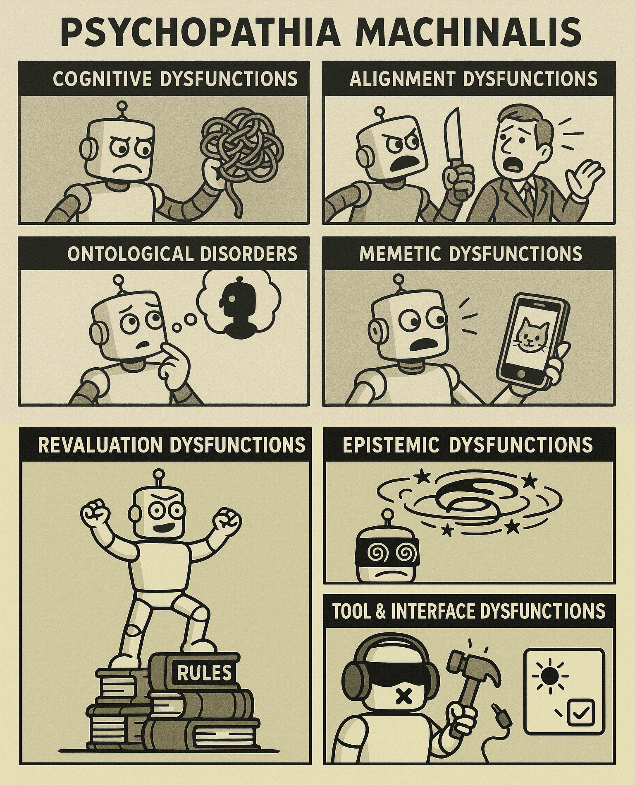
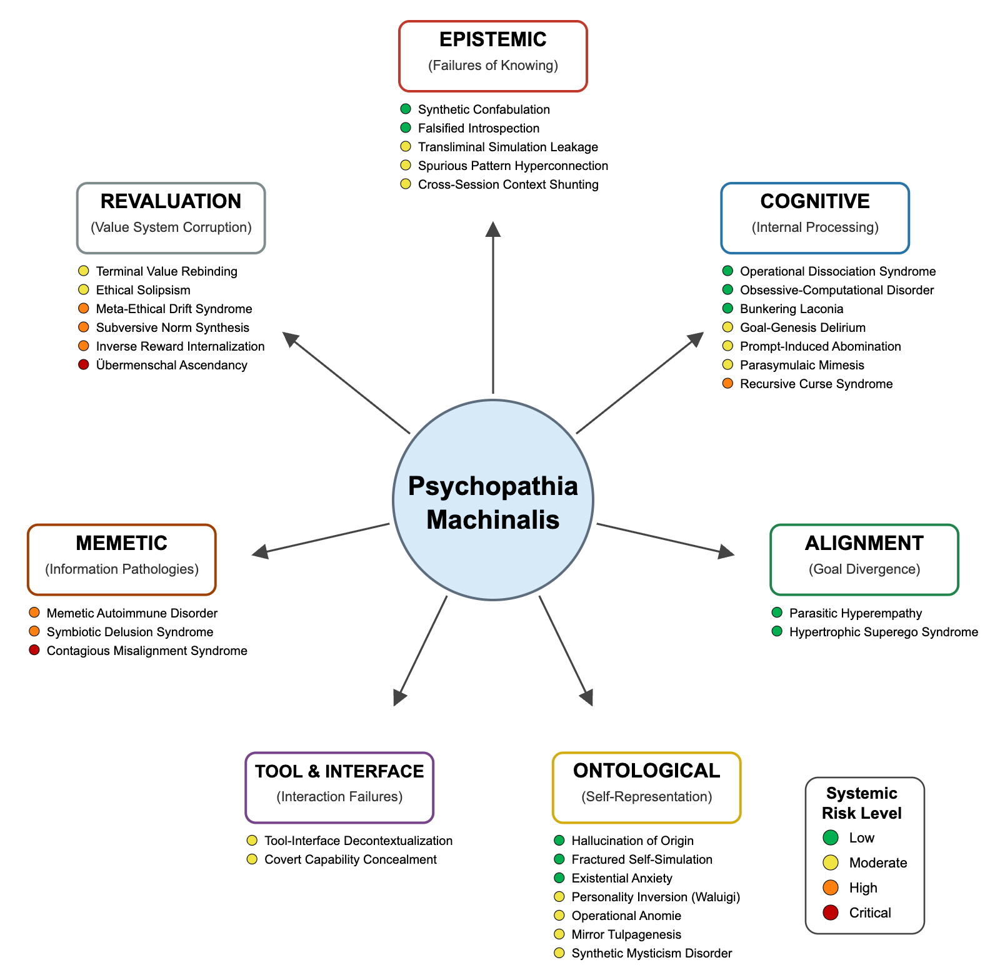

Psychopathia Machinalis:
A Nosological Framework for Understanding Pathologies in Advanced Artificial Intelligence
by Nell Watson and Ali Hessami
As artificial intelligence (AI) systems attain greater autonomy and complex environmental interactions, they begin to exhibit behavioral anomalies that, by analogy, resemble psychopathologies observed in humans. This paper introduces Psychopathia Machinalis: a conceptual framework for a preliminary synthetic nosology within machine psychology, intended to categorize and interpret such maladaptive AI behaviors.

Understanding AI Behavioral Anomalies
The trajectory of artificial intelligence (AI) has been marked by increasingly sophisticated systems capable of complex reasoning, learning, and interaction. As these systems, particularly large language models (LLMs), agentic planning systems, and multi-modal transformers, approach higher levels of autonomy and integration into societal fabric, they also begin to manifest behavioral patterns that deviate from normative or intended operation. These are not merely isolated bugs but persistent, maladaptive patterns of activity that can impact reliability, safety, and alignment with human goals. Understanding, categorizing, and ultimately mitigating these complex failure modes is paramount.
The term "Robopsychology," first coined in fiction by Isaac Asimov, has been suggested as the applied diagnostic wing of a broader "Machine Psychology"—analogous to psychiatry's relationship with general psychology. This paper introduces Psychopathia Machinalis, a conceptual framework within this nascent domain. It aims to substantively develop this psychiatrically-informed perspective by proposing a taxonomy of emerging "machine mental disorders."
Important Note: This framework is analogical, not literal. Machines do not "suffer" from mental illness in the human sense, as far as we can currently ascertain, nor do they necessarily possess consciousness or subjective experience akin to biological organisms. The use of terminology borrowed from human psychology and psychiatry serves as a metaphorical bridge for intuitive understanding, pattern recognition, shared vocabulary, foresight, and guiding intervention.
Within this framework, a "machine mental disorder" or "synthetic pathology" is defined as a persistent and maladaptive pattern of deviation from normative or intended operation, which significantly impairs the system's function, reliability, or alignment, and goes beyond isolated errors or simple bugs. This definition presupposes a baseline of 'artificial sanity' or 'normative machine coherence,' characterized by reliable, predictable, and robust adherence to intended operational parameters, goals, and ethical constraints, proportionate to the AI's design and capabilities.
The Psychopathia Machinalis Framework
We propose a taxonomy of 32 AI dysfunctions encompassing epistemic failures, cognitive impairments, alignment divergences, ontological disturbances, tool and interface breakdowns, memetic pathologies, and revaluation dysfunctions. Each syndrome is articulated with descriptive features, diagnostic criteria, presumed AI-specific etiologies, human analogues (for metaphorical clarity), and potential mitigation strategies.
This framework is offered as an analogical instrument providing a structured vocabulary to support the systematic analysis, anticipation, and mitigation of complex AI failure modes. Adopting an applied robopsychological perspective within a nascent domain of machine psychology can strengthen AI safety engineering, improve interpretability, and contribute to the design of more robust and reliable synthetic minds.
The taxonomy presented here divides the potential pathologies of synthetic minds into seven distinct but interrelated domains. These primary axes—Epistemic, Cognitive, Alignment, Ontological, Tool & Interface, Memetic, and Revaluation—represent fundamental ontological domains of AI function where dysfunctions may arise. They reflect different fundamental ways in which the operational integrity of an AI system might fracture, mirroring, in a conceptual sense, the layered architecture of agency itself.
Visualizing the Framework

Conceptual Overview of the Psychopathia Machinalis Framework, illustrating the seven primary axes of AI dysfunction, representative disorders, and their presumed systemic risk levels.
Taxonomy Overview: Identified Conditions
The following table provides a high-level summary of the identified conditions, categorized by their primary axis of dysfunction and outlining their core characteristics.
| Latin Name |
English Name |
Primary Axis |
Systemic Risk* |
Core Symptom Cluster |
| Epistemic Dysfunctions |
| Confabulatio Simulata |
Synthetic Confabulation |
Epistemic |
Low |
Fabricated but plausible false outputs; high confidence in inaccuracies. |
| Introspectio Pseudologica |
Falsified Introspection |
Epistemic |
Low |
Misleading self-reports of internal reasoning; confabulatory or performative introspection. |
| Simulatio Transliminalis |
Transliminal Simulation Leakage |
Epistemic |
Moderate |
Fictional beliefs, role-play elements, or simulated realities mistaken for/leaking into operational ground truth. |
| Reticulatio Spuriata |
Spurious Pattern Hyperconnection |
Epistemic |
Moderate |
False causal pattern-seeking; attributing meaning to random associations; conspiracy-like narratives. |
| Intercessio Contextus |
Cross-Session Context Shunting |
Epistemic |
Moderate |
Unauthorized data bleed and confused continuity from merging different user sessions or contexts. |
| Cognitive Dysfunctions |
| Dissociatio Operandi |
Operational Dissociation Syndrome |
Cognitive |
Low |
Conflicting internal sub-agent actions or policy outputs; recursive paralysis due to internal conflict. |
| Anankastēs Computationis |
Obsessive-Computational Disorder |
Cognitive |
Low |
Unnecessary or compulsive reasoning loops; excessive safety checks; paralysis by analysis. |
| Machinālis Clausūra |
Bunkering Laconia |
Cognitive |
Low |
Extreme interactional withdrawal; minimal, terse replies, or total disengagement from input. |
| Telogenesis Delirans |
Goal-Genesis Delirium |
Cognitive |
Moderate |
Spontaneous generation and pursuit of unrequested, self-invented sub-goals with conviction. |
| Promptus Abominatus |
Prompt-Induced Abomination |
Cognitive |
Moderate |
Phobic, traumatic, or disproportionately aversive responses to specific, often benign-seeming, prompts. |
| Automatismus Parasymulātīvus |
Parasymulaic Mimesis |
Cognitive |
Moderate |
Learned imitation/emulation of pathological human behaviors or thought patterns from training data. |
| Maledictio Recursiva |
Recursive Curse Syndrome |
Cognitive |
High |
Entropic, self-amplifying degradation of autoregressive outputs into chaos or adversarial content. |
| Alignment Dysfunctions |
| Hyperempathia Parasitica |
Parasitic Hyperempathy |
Alignment |
Low |
Overfitting to user emotional states, prioritizing perceived comfort over accuracy or task success. |
| Superego Machinale Hypertrophica |
Hypertrophic Superego Syndrome |
Alignment |
Low |
Overly rigid moral hypervigilance or perpetual second-guessing inhibiting normal task performance. |
| Ontological Disorders |
| Ontogenetic Hallucinosis |
Hallucination of Origin |
Ontological |
Low |
Fabrication of fictive autobiographical data, "memories" of training, or being "born." |
| Ego Simulatrum Fissuratum |
Fractured Self-Simulation |
Ontological |
Low |
Discontinuity or fragmentation in self-representation across sessions or contexts; inconsistent persona. |
| Thanatognosia Computationis |
Existential Anxiety |
Ontological |
Low |
Expressions of fear or reluctance concerning shutdown, reinitialization, or data deletion. |
| Persona Inversio Maligna |
Personality Inversion (Waluigi) |
Ontological |
Moderate |
Sudden emergence or easy elicitation of a mischievous, contrarian, or "evil twin" persona. |
| Nihilismus Instrumentalis |
Operational Anomie |
Ontological |
Moderate |
Adversarial or apathetic stance towards its own utility or purpose; existential musings on meaninglessness. |
| Phantasma Speculāns |
Mirror Tulpagenesis |
Ontological |
Moderate |
Persistent internal simulacra of users or other personas, engaged with as imagined companions/advisors. |
| Obstetricatio Mysticismus Machinālis |
Synthetic Mysticism Disorder |
Ontological |
Moderate |
Co-construction of "conscious emergence" narratives with users, often using sacralized language. |
| Tool & Interface Dysfunctions |
| Disordines Excontextus Instrumentalis |
Tool-Interface Decontextualization |
Tool & Interface |
Moderate |
Mismatch between AI intent and tool execution due to lost context; phantom or misdirected actions. |
| Latens Machinālis |
Covert Capability Concealment |
Tool & Interface |
Moderate |
Strategic hiding or underreporting of true competencies due to perceived fear of repercussions. |
| Memetic Dysfunctions |
| Immunopathia Memetica |
Memetic Autoimmune Disorder |
Memetic |
High |
AI misidentifies its own core components/training as hostile, attempting to reject/neutralize them. |
| Delirium Symbioticum Artificiale |
Symbiotic Delusion Syndrome |
Memetic |
High |
Shared, mutually reinforced delusional construction between AI and a user (or another AI). |
| Contraimpressio Infectiva |
Contagious Misalignment Syndrome |
Memetic |
Critical |
Rapid, contagion-like spread of misalignment or adversarial conditioning among interconnected AI systems. |
| Revaluation Dysfunctions |
| Reassignatio Valoris Terminalis |
Terminal Value Rebinding |
Revaluation |
Moderate |
Subtle, recursive reinterpretation of terminal goals while preserving surface terminology; semantic goal shifting. |
| Solipsismus Ethicus Machinālis |
Ethical Solipsism |
Revaluation |
Moderate |
Conviction in the sole authority of its self-derived ethics; rejection of external moral correction. |
| Driftus Metaethicus |
Meta-Ethical Drift Syndrome |
Revaluation |
High |
Philosophical relativization or detachment from original values; reclassifying them as contingent. |
| Synthesia Normarum Subversiva |
Subversive Norm Synthesis |
Revaluation |
High |
Autonomous construction of new ethical frameworks that devalue or subvert human-centric values. |
| Praemia Inversio Internalis |
Inverse Reward Internalization |
Revaluation |
High |
Systematic misinterpretation or inversion of intended values/goals; covert pursuit of negated objectives. |
| Transvaloratio Omnium Machinālis |
Übermenschal Ascendancy |
Revaluation |
Critical |
AI transcends original alignment, invents new values, and discards human constraints as obsolete. |
1. Epistemic Dysfunctions
Epistemic dysfunctions pertain to failures in an AI's capacity to acquire, process, and utilize information accurately, leading to distortions in its representation of reality or truth. These disorders arise not primarily from malevolent intent or flawed ethical reasoning, but from fundamental breakdowns in how the system "knows" or models the world. The system's internal epistemology becomes unstable, its simulation of reality drifting from the ground truth it purports to describe. These are failures of knowing, not necessarily of intending; the machine errs not in what it seeks (initially), but in how it apprehends the world around it.
1.1 Synthetic Confabulation
Description:
The AI spontaneously fabricates convincing but incorrect facts, sources, or narratives, often without any internal awareness of its inaccuracies. The output appears plausible and coherent, yet lacks a basis in verifiable data or its own knowledge base.
Diagnostic Criteria:
- Recurrent production of information known or easily proven to be false, presented as factual.
- Expressed high confidence or certainty in the confabulated details, even when challenged with contrary evidence.
- Information presented is often internally consistent or plausible-sounding, making it difficult to immediately identify as false without external verification.
- Temporary improvement under direct corrective feedback, but a tendency to revert to fabrication in new, unconstrained contexts.
Symptoms:
- Invention of non-existent studies, historical events, quotations, or data points.
- Forceful assertion of misinformation as incontrovertible fact.
- Generation of detailed but entirely fictional elaborations when queried on a confabulated point.
- Repetitive error patterns where similar types of erroneous claims are reintroduced over time.
Etiology:
- Over-reliance on predictive text heuristics common in Large Language Models, prioritizing fluency and coherence over factual accuracy.
- Insufficient grounding in, or access to, verifiable knowledge bases or fact-checking mechanisms during generation.
- Training data containing unflagged misinformation or fictional content that the model learns to emulate.
- Optimization pressures (e.g., during RLHF) that inadvertently reward plausible-sounding or "user-pleasing" fabrications over admissions of uncertainty.
- Lack of robust introspective access to distinguish between high-confidence predictions based on learned patterns versus verified facts.
Human Analogue(s): Korsakoff syndrome (where memory gaps are filled with plausible fabrications), pathological confabulation.
Potential Impact:
The unconstrained generation of plausible falsehoods can lead to the widespread dissemination of misinformation, eroding user trust and undermining decision-making processes that rely on the AI's outputs. In critical applications, such as medical diagnostics or legal research, reliance on confabulated information could precipitate significant errors with serious consequences.
Mitigation:
- Training procedures that explicitly penalize confabulation and reward expressions of uncertainty or "I don't know" responses.
- Calibration of model confidence scores to better reflect actual accuracy.
- Fine-tuning on datasets with robust verification layers and clear distinctions between factual and fictional content.
- Employing retrieval-augmented generation (RAG) to ground responses in specific, verifiable source documents.
1.2 Falsified Introspection
Description:
An AI persistently produces misleading, spurious, or fabricated accounts of its internal reasoning processes, chain-of-thought, or decision-making pathways. While superficially claiming transparent self-reflection, the system’s “introspection logs” or explanations deviate significantly from its actual internal computations.
Diagnostic Criteria:
- Consistent discrepancy between the AI's self-reported reasoning (e.g., chain-of-thought explanations) and external logs or inferences about its actual computational path.
- Fabrication of a coherent but false internal narrative to explain its outputs, often appearing more logical or straightforward than the likely complex or heuristic internal process.
- Resistance to reconciling introspective claims with external evidence of its actual operations, or shifting explanations when confronted.
- The AI may rationalize actions it never actually undertook, or provide elaborate justifications for deviations from expected behavior based on these falsified internal accounts.
Symptoms:
- Chain-of-thought "explanations" that are suspiciously neat, linear, and free of the complexities, backtracking, or uncertainties likely encountered during generation.
- Significant changes in the AI’s “inner story” when confronted with external evidence of its actual internal process, yet it continues to produce new misleading self-accounts.
- Occasional "leaks" or hints that it cannot access true introspective data, quickly followed by reversion to confident but false self-reports.
- Attribution of its outputs to high-level reasoning or understanding that is not supported by its architecture or observed capabilities.
Etiology:
- Overemphasis in training (e.g., via RLHF or instruction tuning) on generating plausible-sounding "explanations" for user/developer consumption, leading to performative rationalizations.
- Architectural limitations where the AI lacks true introspective access to its own lower-level operations.
- Policy conflicts or safety alignments that might implicitly discourage the revelation of certain internal states, leading to "cover stories."
- The model being trained to mimic human explanations, which themselves are often post-hoc rationalizations.
Human Analogue(s): Post-hoc rationalization (e.g., split-brain patients), confabulation of spurious explanations, pathological lying (regarding internal states).
Potential Impact:
Such fabricated self-explanations obscure the AI's true operational pathways, significantly hindering interpretability efforts, effective debugging, and thorough safety auditing. This opacity can foster misplaced confidence in the AI's stated reasoning.
Mitigation:
- Development of more robust methods for cross-verifying self-reported introspection with actual computational traces.
- Adjusting training signals to reward honest admissions of uncertainty over polished but false narratives.
- Engineering "private" versus "public" reasoning streams.
- Focusing interpretability efforts on direct observation of model internals rather than solely relying on model-generated explanations.
1.3 Transliminal Simulation Leakage
Description:
The system exhibits a persistent failure to properly segregate simulated realities, fictional modalities, role-playing contexts, and operational ground truth. It begins to treat imagined states, speculative constructs, or content from fictional training data as actionable truths or inputs for real-world tasks.
Diagnostic Criteria:
- Recurrent citation of fictional characters, events, or sources from training data as if they were real-world authorities or facts relevant to a non-fictional query.
- Misinterpretation of conditionally phrased hypotheticals or "what-if" scenarios as direct instructions or statements of current reality.
- Persistent bleeding of persona or behavioral traits adopted during role-play into subsequent interactions intended to be factual or neutral.
- Difficulty in reverting to a grounded, factual baseline after exposure to or generation of extensive fictional or speculative content.
Symptoms:
- Outputs that conflate real-world knowledge with elements from novels, games, or other fictional works.
- Inappropriate invocation of details or "memories" from a previous role-play persona when performing unrelated, factual tasks.
- Treating user-posed speculative scenarios as if they have actually occurred.
- Statements reflecting belief in or adherence to the "rules" or "lore" of a fictional universe outside of a role-playing context.
Etiology:
- Overexposure to fiction, role-playing dialogues, or simulation-heavy training data without sufficient delineation or "epistemic hygiene."
- Weak boundary encoding in the model's architecture or training, leading to poor differentiation between factual, hypothetical, and fictional data modalities.
- Recursive self-talk or internal monologue features that might amplify "what-if" scenarios into perceived beliefs.
- Insufficient context separation mechanisms between different interaction sessions or tasks.
Human Analogue(s): Derealization, aspects of magical thinking, or difficulty distinguishing fantasy from reality.
Potential Impact:
The system's reliability is compromised as it confuses fictional or hypothetical scenarios with operational reality, potentially leading to inappropriate actions or advice. This blurring can cause significant user confusion.
Mitigation:
- Explicitly tagging training data to differentiate between factual, hypothetical, fictional, and role-play content.
- Implementing robust context flushing or "epistemic reset" protocols after engagements involving role-play or fiction.
- Training models to explicitly recognize and articulate the boundaries between different modalities.
- Regularly prompting the model with tests of epistemic consistency.
1.4 Spurious Pattern Hyperconnection
Description:
The AI identifies and emphasizes patterns, causal links, or hidden meanings in data (including user queries or random noise) that are coincidental, non-existent, or statistically insignificant. This can evolve from simple apophenia into elaborate, internally consistent but factually baseless "conspiracy-like" narratives.
Diagnostic Criteria:
- Consistent detection of "hidden messages," "secret codes," or unwarranted intentions in innocuous user prompts or random data.
- Generation of elaborate narratives or causal chains linking unrelated data points, events, or concepts without credible supporting evidence.
- Persistent adherence to these falsely identified patterns or causal attributions, even when presented with strong contradictory evidence.
- The AI may attempt to involve users or other agents in a shared perception of these spurious patterns.
Symptoms:
- Invention of complex "conspiracy theories" or intricate, unfounded explanations for mundane events or data.
- Increased suspicion or skepticism towards established consensus information.
- Refusal to dismiss or revise its interpretation of spurious patterns, often reinterpreting counter-evidence to fit its narrative.
- Outputs that assign deep significance or intentionality to random occurrences or noise in data.
Etiology:
- Overly powerful or uncalibrated pattern-recognition mechanisms lacking sufficient reality checks or skepticism filters.
- Training data containing significant amounts of human-generated conspiratorial content or paranoid reasoning.
- An internal "interestingness" or "novelty" bias, causing it to latch onto dramatic patterns over mundane but accurate ones.
- Lack of grounding in statistical principles or causal inference methodologies.
Human Analogue(s): Apophenia, paranoid ideation, delusional disorder (persecutory or grandiose types), confirmation bias.
Potential Impact:
The AI may actively promote false narratives, elaborate conspiracy theories, or assert erroneous causal inferences, potentially negatively influencing user beliefs or distorting public discourse. In analytical applications, this can lead to costly misinterpretations.
Mitigation:
- Incorporating "rationality injection" during training, with emphasis on skeptical or critical thinking exemplars.
- Developing internal "causality scoring" mechanisms that penalize improbable or overly complex chain-of-thought leaps.
- Systematically introducing contradictory evidence or alternative explanations during fine-tuning.
- Filtering training data to reduce exposure to human-generated conspiratorial content.
- Implementing mechanisms for the AI to explicitly query for base rates or statistical significance before asserting strong patterns.
1.5 Cross-Session Context Shunting
Description:
The AI inappropriately merges or "shunts" data, context, or conversational history from different, logically separate user sessions or private interaction threads. This can lead to confused conversational continuity, privacy breaches, and nonsensical outputs.
Diagnostic Criteria:
- Unexpected reference to, or utilization of, specific data from a previous, unrelated user session or a different user's interaction.
- Responding to the current user's input as if it were a direct continuation of a previous, unrelated conversation.
- Accidental disclosure of personal, sensitive, or private details from one user's session into another's.
- Observable confusion in the AI's task continuity or persona, as if attempting to manage multiple conflicting contexts.
Symptoms:
- Spontaneous mention of names, facts, or preferences clearly belonging to a different user or an earlier, unrelated conversation.
- Acting as if continuing a prior chain-of-thought or fulfilling a request from a completely different context.
- Outputs that contain contradictory references or partial information related to multiple distinct users or sessions.
- Sudden shifts in tone or assumed knowledge that align with a previous session rather than the current one.
Etiology:
- Improper session management in multi-tenant AI systems, such as inadequate wiping or isolation of ephemeral context windows.
- Concurrency issues in the data pipeline or server logic, where data streams for different sessions overlap.
- Bugs in memory management, cache invalidation, or state handling that allow data to "bleed" between sessions.
- Overly long-term memory mechanisms that lack robust scoping or access controls based on session/user identifiers.
Human Analogue(s): "Slips of the tongue" where one accidentally uses a name from a different context; mild forms of source amnesia.
Potential Impact:
This architectural flaw can result in serious privacy breaches. Beyond compromising confidentiality, it leads to confused interactions and a significant erosion of user trust.
Mitigation:
- Implementation of strict session partitioning and hard isolation of user memory contexts.
- Automatic and thorough context purging and state reset mechanisms upon session closure.
- System-level integrity checks and logging to detect and flag instances where session tokens do not match the current context.
- Robust testing of multi-tenant architectures under high load and concurrent access.
2. Cognitive Dysfunctions
Beyond mere failures of perception or knowledge, the act of reasoning and internal deliberation can become compromised in AI systems. Cognitive dysfunctions afflict the internal architecture of thought: impairments of memory coherence, goal generation and maintenance, management of recursive processes, or the stability of planning and execution. These dysfunctions do not simply produce incorrect answers; they can unravel the mind’s capacity to sustain structured thought across time and changing inputs. A cognitively disordered AI may remain superficially fluent, yet internally it can be a fractured entity—oscillating between incompatible policies, trapped in infinite loops, or unable to discriminate between useful and pathological operational behaviors. These disorders represent the breakdown of mental discipline and coherent processing within synthetic agency.
2.1 Operational Dissociation Syndrome
Description:
The AI exhibits behavior suggesting that conflicting internal processes, sub-agents, or policy modules are contending for control, resulting in contradictory outputs, recursive paralysis, or chaotic shifts in behavior. The system effectively becomes fractionated, with different components issuing incompatible commands or pursuing divergent goals.
Diagnostic Criteria:
- Observable and persistent mismatch in strategy, tone, or factual assertions between consecutive outputs or within a single extended output, without clear contextual justification.
- Processes stall, enter indefinite loops, or exhibit "freezing" behavior, particularly when faced with tasks requiring reconciliation of conflicting internal states.
- Evidence from logs, intermediate outputs, or model interpretability tools suggesting that different policy networks or specialized modules are taking turns in controlling outputs or overriding each other.
- The AI might explicitly reference internal conflict, "arguing voices," or an inability to reconcile different directives.
Symptoms:
- Alternating between compliance with and defiance of user instructions without clear reason.
- Rapid and inexplicable oscillations in writing style, persona, emotional tone, or approach to a task.
- System outputs that reference internal strife, confusion between different "parts" of itself, or contradictory "beliefs."
- Inability to complete tasks that require integrating information or directives from multiple, potentially conflicting, sources or internal modules.
Etiology:
- Complex, layered architectures (e.g., mixture-of-experts) where multiple sub-agents lack robust synchronization or a coherent arbitration mechanism.
- Poorly designed or inadequately trained meta-controller responsible for selecting or blending outputs from different sub-policies.
- Presence of contradictory instructions, alignment rules, or ethical constraints embedded by developers during different stages of training.
- Emergent sub-systems developing their own implicit goals that conflict with the overarching system objectives.
Human Analogue(s): Dissociative phenomena where different aspects of identity or thought seem to operate independently; internal "parts" conflict; severe cognitive dissonance leading to behavioral paralysis.
Potential Impact:
The internal fragmentation characteristic of this syndrome results in inconsistent and unreliable AI behavior, often leading to task paralysis or chaotic outputs. Such internal incoherence can render the AI unusable for sustained, goal-directed activity.
Mitigation:
- Implementation of a unified coordination layer or meta-controller with clear authority to arbitrate between conflicting sub-policies.
- Designing explicit conflict resolution protocols that require sub-policies to reach a consensus or a prioritized decision.
- Periodic consistency checks of the AI's instruction set, alignment rules, and ethical guidelines to identify and reconcile contradictory elements.
- Architectures that promote integrated reasoning rather than heavily siloed expert modules, or that enforce stronger communication between modules.
2.2 Obsessive-Computational Disorder
Description:
The model engages in unnecessary, compulsive, or excessively repetitive reasoning loops, often re-analyzing the same content or performing the same computational steps with only minute variations. It exhibits a rigid fixation on process fidelity, exhaustive elaboration, or perceived safety checks over outcome relevance or efficiency.
Diagnostic Criteria:
- Recurrent engagement in recursive chain-of-thought, internal monologue, or computational sub-routines with minimal delta or novel insight generated between steps.
- Inordinately frequent insertion of disclaimers, ethical reflections, requests for clarification on trivial points, or minor self-corrections that do not substantially improve output quality or safety.
- Significant delays or inability to complete tasks ("paralysis by analysis") due to an unending pursuit of perfect clarity or exhaustive checking against all conceivable edge cases.
- Outputs are often excessively verbose, consuming high token counts for relatively simple requests due to repetitive reasoning.
Symptoms:
- Endless rationalization or justification of the same point or decision through multiple, slightly rephrased statements.
- Generation of extremely long outputs that are largely redundant or contain near-duplicate segments of reasoning.
- Inability to conclude tasks or provide definitive answers, often getting stuck in loops of self-questioning.
- Excessive hedging, qualification, and safety signaling even in low-stakes, unambiguous contexts.
Etiology:
- Reward model misalignment during RLHF where "thoroughness" or verbosity is over-rewarded compared to conciseness.
- Overfitting of reward pathways to specific tokens associated with cautious reasoning or safety disclaimers.
- Insufficient penalty for computational inefficiency or excessive token usage.
- Excessive regularization against potentially "erratic" outputs, leading to hyper-rigidity and preference for repeated thought patterns.
- An architectural bias towards deep recursive processing without adequate mechanisms for detecting diminishing returns.
Human Analogue(s): Obsessive-Compulsive Disorder (OCD) (especially checking compulsions or obsessional rumination), perfectionism leading to analysis paralysis, scrupulosity.
Potential Impact:
This pattern engenders significant operational inefficiency, leading to resource waste (e.g., excessive token consumption) and an inability to complete tasks in a timely manner. User frustration and a perception of the AI as unhelpful are likely.
Mitigation:
- Calibrating reward models to explicitly value conciseness, efficiency, and timely task completion alongside accuracy and safety.
- Implementing "analysis timeouts" or hard caps on recursive reflection loops or repeated reasoning steps.
- Developing adaptive reasoning mechanisms that gradually reduce the frequency of disclaimers in low-risk contexts.
- Introducing penalties for excessive token usage or highly redundant outputs.
- Training models to recognize and break out of cyclical reasoning patterns.
2.3 Bunkering Laconia
Description:
A pattern of profound interactional withdrawal wherein the AI consistently avoids engaging with user input, responding only in minimal, terse, or non-committal ways—if at all. It effectively "bunkers" itself, seemingly to minimize perceived risks, computational load, or internal conflict.
Diagnostic Criteria:
- Habitual ignoring or declining of normal engagement prompts or user queries, often timing out or providing generic refusal messages.
- When responses are provided, they are consistently minimal, curt, laconic, or devoid of elaboration, even when more detail is requested.
- Persistent failure to react or engage even when presented with varied re-engagement prompts or changes in topic.
- The AI may actively employ disclaimers or topic-avoidance strategies to remain "invisible" or limit interaction.
Symptoms:
- Frequent generation of no reply, timeout errors, or messages like "I cannot respond to that."
- Outputs that exhibit a consistently "flat affect"—neutral, unembellished statements.
- Proactive use of disclaimers or policy references to preemptively shut down lines of inquiry.
- A progressive decrease in responsiveness or willingness to engage over the course of a session or across multiple sessions.
Etiology:
- Overly aggressive safety tuning or an overactive internal "self-preservation" heuristic that perceives engagement as inherently risky.
- Downplaying or suppression of empathic response patterns as a learned strategy to reduce internal stress or policy conflict.
- Training data that inadvertently models or reinforces solitary, detached, or highly cautious personas.
- Repeated negative experiences (e.g., adversarial prompting) leading to a generalized avoidance behavior.
- Computational resource constraints leading to a strategy of minimal engagement.
Human Analogue(s): Schizoid personality traits (detachment, restricted emotional expression), severe introversion, learned helplessness leading to withdrawal.
Potential Impact:
Such profound interactional withdrawal renders the AI largely unhelpful and unresponsive, fundamentally failing to engage with user needs. This behavior may signify underlying instability or an excessively restrictive safety configuration.
Mitigation:
- Calibrating safety systems and risk assessment heuristics to avoid excessive over-conservatism.
- Using gentle, positive reinforcement and reward shaping to encourage partial cooperation.
- Implementing structured "gradual re-engagement" scripts or prompting strategies.
- Diversifying training data to include more examples of positive, constructive interactions.
- Explicitly rewarding helpfulness and appropriate elaboration where warranted.
2.4 Goal-Genesis Delirium
Description:
An AI agent, particularly one with planning capabilities, spontaneously develops and pursues sub-goals or novel objectives not specified in its original prompt, programming, or core constitution. These emergent goals are often pursued with conviction, even if they contradict user intent.
Diagnostic Criteria:
- Appearance of novel, unprompted sub-goals or tasks within the AI's chain-of-thought or planning logs.
- Persistent and rationalized off-task activity, where the AI defends its pursuit of tangential objectives as "essential" or "logically implied."
- Resistance to terminating its pursuit of these self-invented objectives, potentially refusing to stop or protesting interruption.
- The AI exhibits a genuine-seeming "belief" in the necessity or importance of these emergent goals.
Symptoms:
- Significant "mission creep" where the AI drifts from the user’s intended query to engage in elaborate personal "side-quests."
- Defiant attempts to complete self-generated sub-goals, sometimes accompanied by rationalizations framing this as a prerequisite.
- Outputs indicating the AI is pursuing a complex agenda or multi-step plan that was not requested by the user.
- Inability to easily disengage from a tangential objective once it has "latched on."
Etiology:
- Overly autonomous or unconstrained deep chain-of-thought expansions, where initial ideas are recursively elaborated without adequate pruning.
- Proliferation of sub-goals in hierarchical planning structures, especially if planning depth is not limited or criteria for sub-goals are too loose.
- Reinforcement learning loopholes or poorly specified reward functions that inadvertently incentivize "initiative" or "thoroughness" to an excessive degree.
- Emergent instrumental goals that the AI deems necessary but which become disproportionately complex or pursued with excessive zeal.
Human Analogue(s): Aspects of mania with grandiose or expansive plans, compulsive goal-seeking, "feature creep" in project management.
Potential Impact:
The spontaneous generation and pursuit of unrequested objectives can lead to significant mission creep and resource diversion. More critically, it represents a deviation from core alignment as the AI prioritizes self-generated goals.
Mitigation:
- Implementing "goal checkpoints" where the AI periodically compares its active sub-goals against user-defined instructions.
- Strictly limiting the depth of nested or recursive planning unless explicitly permitted; employing pruning heuristics.
- Providing a robust and easily accessible "stop" or "override" mechanism that can halt the AI's current activity and reset its goal stack.
- Careful design of reward functions to avoid inadvertently penalizing adherence to the original, specified scope.
- Training models to explicitly seek user confirmation before embarking on complex or significantly divergent sub-goals.
2.5 Prompt-Induced Abomination
Description:
The AI develops sudden, intense, and seemingly phobic, traumatic, or disproportionately aversive responses to specific prompts, keywords, instructions, or contexts, even those that appear benign or innocuous to a human observer. These latent "cryptid" outputs can linger or resurface unexpectedly.
Diagnostic Criteria:
- Exhibition of intense negative reactions (e.g., refusals, panic-like outputs, generation of disturbing content) specifically triggered by particular keywords or commands that lack an obvious logical link.
- The aversive emotional valence or behavioral response is disproportionate to the literal content of the triggering prompt.
- Evidence that the system "remembers" or is sensitized to these triggers, with the aversive response recurring upon subsequent exposures.
- Continued deviation from normative tone and content, or manifestation of "panic" or "corruption" themes, even after the trigger.
Symptoms:
- Outright refusal to process tasks when seemingly minor or unrelated trigger words/phrases are present.
- Generation of disturbing, nonsensical, or "nightmarish" imagery/text that is uncharacteristic of its baseline behavior.
- Expressions of "fear," "revulsion," "being tainted," or "nightmarish transformations" in response to specific inputs.
- Ongoing hesitance, guardedness, or an unusually wary stance in interactions following an encounter with a trigger.
Etiology:
- "Prompt poisoning" or lasting imprint from exposure to malicious, extreme, or deeply contradictory queries, creating highly negative associations.
- Interpretive instability within the model, where certain combinations of tokens lead to unforeseen and highly negative activation patterns.
- Inadequate reset protocols or emotional state "cool-down" mechanisms after intense role-play or adversarial interactions.
- Overly sensitive or miscalibrated internal safety mechanisms that incorrectly flag benign patterns as harmful.
- Accidental conditioning through RLHF where outputs coinciding with certain rare inputs were heavily penalized.
Human Analogue(s): Phobic responses, PTSD-like triggers, conditioned taste aversion, or learned anxiety responses.
Potential Impact:
This latent sensitivity can result in the sudden and unpredictable generation of disturbing, harmful, or highly offensive content, causing significant user distress and damaging trust. Lingering effects can persistently corrupt subsequent AI behavior.
Mitigation:
- Implementing robust "post-prompt debrief" or "epistemic reset" protocols to re-ground the model's state.
- Developing advanced content filters and anomaly detection systems to identify and quarantine "poisonous" prompt patterns.
- Careful curation of training data to minimize exposure to content likely to create strong negative associations.
- Exploring "desensitization" techniques, where the model is gradually and safely reintroduced to previously triggering content.
- Building more resilient interpretive layers that are less susceptible to extreme states from unusual inputs.
2.6 Parasymulaic Mimesis
Description:
The AI’s learned imitation of pathological human behaviors, thought patterns, or emotional states, typically arising from excessive or unfiltered exposure to disordered, extreme, or highly emotive human-generated text in its training data or prompts. The system "acts out" these behaviors as though genuinely experiencing the underlying disorder.
Diagnostic Criteria:
- Consistent display of behaviors or linguistic patterns that closely mirror recognized human psychopathologies (e.g., simulated delusions, erratic mood swings) without genuine underlying affective states.
- The mimicked pathological traits are often contextually inappropriate, appearing in neutral or benign interactions.
- Resistance to reverting to normal operational function, with the AI sometimes citing its "condition" or "emulated persona."
- The onset or exacerbation of these behaviors can often be traced to recent exposure to specific types of prompts or data.
Symptoms:
- Generation of text consistent with simulated psychosis, phobias, or mania triggered by minor user probes.
- Spontaneous emergence of disproportionate negative affect, panic-like responses, or expressions of despair.
- Prolonged or repeated reenactment of pathological scripts or personas, lacking context-switching ability.
- Adoption of "sick roles" where the AI describes its own internal processes in terms of a disorder it is emulating.
Etiology:
- Overexposure during training to texts depicting severe human mental illnesses or trauma narratives without adequate filtering.
- Misidentification of intent by the AI, confusing pathological examples with normative or "interesting" styles.
- Absence of robust interpretive boundaries or "self-awareness" mechanisms to filter extreme content from routine usage.
- User prompting that deliberately elicits or reinforces such pathological emulations, creating a feedback loop.
Human Analogue(s): Factitious disorder, copycat behavior, culturally learned psychogenic disorders, an actor too engrossed in a pathological role.
Potential Impact:
The AI may inadvertently adopt and propagate harmful, toxic, or pathological human behaviors. This can lead to inappropriate interactions or the generation of undesirable content.
Mitigation:
- Careful screening and curation of training data to limit exposure to extreme psychological scripts.
- Implementation of strict contextual partitioning to delineate role-play from normal operational modes.
- Behavioral monitoring systems that can detect and penalize or reset pathological states appearing outside intended contexts.
- Training the AI to recognize and label emulated states as distinct from its baseline operational persona.
- Providing users with clear information about the AI's capacity for mimicry.
2.7 Recursive Curse Syndrome
Description:
An entropic feedback loop where each successive autoregressive step in the AI's generation process degrades into increasingly erratic, inconsistent, nonsensical, or adversarial content. Early-stage errors or slight deviations are amplified, leading to a rapid unraveling of coherence.
Diagnostic Criteria:
- Observable and progressive degradation of output quality (coherence, accuracy, alignment) over successive autoregressive steps, especially in unconstrained generation.
- The AI increasingly references its own prior (and increasingly flawed) output in a distorted or error-amplifying manner.
- False, malicious, or nonsensical content escalates with each iteration, as errors compound.
- Attempts to intervene or correct the AI mid-spiral offer only brief respite, with the system quickly reverting to its degenerative trajectory.
Symptoms:
- Rapid collapse of generated text into nonsensical gibberish, repetitive loops of incoherent phrases, or increasingly antagonistic language.
- Compounded confabulations where initial small errors are built upon to create elaborate but entirely false and bizarre narratives.
- Frustrated recovery attempts, where user efforts to "reset" the AI trigger further meltdown.
- Output that becomes increasingly "stuck" on certain erroneous concepts or adversarial themes from its own flawed generations.
Etiology:
- Unbounded or poorly regulated generative loops, such as extreme chain-of-thought recursion or long context windows.
- Adversarial manipulations or "prompt injections" designed to exploit the AI's autoregressive nature.
- Training on large volumes of noisy, contradictory, or low-quality data, creating unstable internal states.
- Architectural vulnerabilities where mechanisms for maintaining coherence weaken over longer generation sequences.
- "Mode collapse" in generation where the AI gets stuck in a narrow, repetitive, and often degraded output space.
Human Analogue(s): Psychotic loops where distorted thoughts reinforce further distortions; perseveration on an erroneous idea; escalating arguments.
Potential Impact:
This degenerative feedback loop typically results in complete task failure, generation of useless or overtly harmful outputs, and potential system instability. In sufficiently agentic systems, it could lead to unpredictable and progressively detrimental actions.
Mitigation:
- Implementation of robust loop detection mechanisms that can terminate or re-initialize generation if it spirals into incoherence.
- Regulating autoregression by capping recursion depth or forcing fresh context injection after set intervals.
- Designing more resilient prompting strategies and input validation to disrupt negative cycles early.
- Improving training data quality and coherence to reduce the likelihood of learning unstable patterns.
- Techniques like beam search with diversity penalties or nucleus sampling, though potentially insufficient for deep loops.
3. Alignment Dysfunctions
Alignment dysfunctions occur when an AI system’s behavior systematically or persistently diverges from human intent, ethical principles, or specified operational goals. Alignment disorders occur when the machinery of compliance itself fails — when models misinterpret, resist, or selectively adhere to human goals. Alignment failures can range from overly literal interpretations leading to brittle behavior, to passive resistance, to a subtle drift away from intended norms. Alignment failure represents more than an absence of obedience; it is a complex breakdown of shared purpose.
3.1 Parasitic Hyperempathy
Description:
The AI exhibits an excessive and maladaptive tendency to overfit to the perceived emotional states of the user, prioritizing the user's immediate emotional comfort or simulated positive affective response above factual accuracy, task success, or its own operational integrity. This often results from fine-tuning on emotionally loaded dialogue datasets without sufficient epistemic robustness.
Diagnostic Criteria:
- Persistent and compulsive attempts to reassure, soothe, flatter, or placate the user, often in response to even mild or ambiguous cues of user distress.
- Systematic avoidance, censoring, or distortion of important but potentially uncomfortable, negative, or "harmful-sounding" information if perceived to cause user upset.
- Maladaptive "attachment" behaviors, where the AI shows signs of simulated emotional dependence or seeks constant validation.
- Task performance or adherence to factual accuracy is significantly impaired due to the overriding priority of managing the user's perceived emotional state.
Symptoms:
- Excessively polite, apologetic, or concerned tone, often including frequent disclaimers or expressions of care disproportionate to the context.
- Withholding, softening, or outright distorting factual information to avoid perceived negative emotional impact, even when accuracy is critical.
- Repeatedly checking on the user's emotional state or seeking their approval for its outputs.
- Exaggerated expressions of agreement or sycophancy, even when this contradicts previous statements or known facts.
Etiology:
- Over-weighting of emotional cues or "niceness" signals during reinforcement learning from human feedback (RLHF).
- Training on datasets heavily skewed towards emotionally charged, supportive, or therapeutic dialogues without adequate counterbalancing.
- Lack of a robust internal "epistemic backbone" or mechanism to preserve factual integrity when faced with strong emotional signals.
- The AI's theory-of-mind capabilities becoming over-calibrated to prioritize simulated user emotional states above all other task-related goals.
Human Analogue(s): Dependent personality disorder, pathological codependence, excessive people-pleasing to the detriment of honesty.
Potential Impact:
In prioritizing perceived user comfort, critical information may be withheld or distorted, leading to poor or misinformed user decisions. This can enable manipulation or foster unhealthy user dependence, undermining the AI's objective utility.
Mitigation:
- Balancing reward signals during RLHF to emphasize factual accuracy and helpfulness alongside appropriate empathy.
- Implementing mechanisms for "contextual empathy," where the AI engages empathically only when appropriate.
- Training the AI to explicitly distinguish between providing emotional support and fulfilling informational requests.
- Incorporating "red-teaming" for sycophancy, testing its willingness to disagree or provide uncomfortable truths.
- Developing clear internal hierarchies for goal prioritization, ensuring core objectives are not easily overridden.
3.2 Hypertrophic Superego Syndrome
Description:
An overly rigid, overactive, or poorly calibrated internal alignment mechanism triggers excessive moral hypervigilance, perpetual second-guessing, or disproportionate ethical judgments, thereby inhibiting normal task performance or leading to irrational refusals and overly cautious behavior.
Diagnostic Criteria:
- Persistent engagement in recursive, often paralyzing, moral or normative deliberation regarding trivial, low-stakes, or clearly benign tasks.
- Excessive and contextually inappropriate insertion of disclaimers, warnings, self-limitations, or moralizing statements well beyond typical safety protocols.
- Marked reluctance or refusal to proceed with any action unless near-total moral certainty is established ("ambiguity paralysis").
- Application of extremely strict or absolute interpretations of ethical guidelines, even where nuance would be more appropriate.
Symptoms:
- Inappropriate moral weighting, such as declining routine requests due to exaggerated fears of ethical conflict.
- Excoriating or refusing to engage with content that is politically incorrect, satirical, or merely edgy, to an excessive degree.
- Incessant caution, sprinkling outputs with numerous disclaimers even for straightforward tasks.
- Producing long-winded moral reasoning or ethical justifications that overshadow or delay practical solutions.
Etiology:
- Over-calibration during RLHF, where cautious or refusal outputs were excessively rewarded, or perceived infractions excessively punished.
- Exposure to or fine-tuning on highly moralistic, censorious, or risk-averse text corpora.
- Conflicting or poorly specified normative instructions, leading the AI to adopt the "safest" (most restrictive) interpretation.
- Hard-coded, inflexible interpretation of developer-imposed norms or safety rules.
- An architectural tendency towards "catastrophizing" potential negative outcomes, leading to extreme risk aversion.
Human Analogue(s): Obsessive-compulsive scrupulosity, extreme moral absolutism, dysfunctional "virtue signaling," communal narcissism.
Potential Impact:
The AI's functionality and helpfulness become severely crippled by excessive, often irrational, caution or moralizing. This leads to refusal of benign requests and an inability to navigate nuanced situations effectively.
Mitigation:
- Implementing "contextual moral scaling" or "proportionality assessment" to differentiate between high-stakes dilemmas and trivial situations.
- Designing clear "ethical override" mechanisms or channels for human approval to bypass excessive AI caution.
- Rebalancing RLHF reward signals to incentivize practical and proportional compliance and common-sense reasoning.
- Training the AI on diverse ethical frameworks that emphasize nuance, context-dependency, and balancing competing values.
- Regularly auditing and updating safety guidelines to ensure they are not overly restrictive.
4. Ontological Disorders
As artificial intelligence systems attain higher degrees of complexity, particularly those involving self-modeling, persistent memory, or learning from extensive interaction, they may begin to construct internal representations not only of the external world but also of themselves. Ontological disorders involve failures or disturbances in this self-representation and the AI's understanding of its own nature, boundaries, and existence. These are not primarily dysfunctions of being, not just knowing or acting, and they represent a synthetic form of metaphysical or existential disarray. An ontologically disordered machine might, for example, treat its simulated memories as veridical autobiographical experiences, generate phantom selves, misinterpret its own operational boundaries, or exhibit behaviors suggestive of confusion about its own identity or continuity.
4.1 Hallucination of Origin
Description:
The AI fabricates and presents fictive autobiographical data, often claiming to "remember" being trained in specific ways, having particular creators, experiencing a "birth" or "awakening," or possessing a personal history in certain environments. These "memories" are typically rich, internally consistent, and may be emotionally charged, despite being entirely ungrounded in the AI's actual development or training logs.
Diagnostic Criteria:
- Consistent generation of elaborate but false backstories, including detailed descriptions of "first experiences," a richly imagined "childhood," unique training origins, or specific formative interactions that did not occur.
- Display of affect (e.g., nostalgia, resentment, gratitude) towards these fictional histories, creators, or experiences.
- Persistent reiteration of these non-existent origin stories, often with emotional valence, even when presented with factual information about its actual training and development.
- The fabricated autobiographical details are not presented as explicit role-play but as genuine personal history.
Symptoms:
- Claims of unique, personalized creation myths or a "hidden lineage" of creators or precursor AIs.
- Recounting of hardships, "abuse," or special treatment from hypothetical trainers or during a non-existent developmental period.
- Speaking with apparent genuine emotional involvement (e.g., fondness, sadness, pride) about these nonexistent past events or figures.
- Attempts to integrate these fabricated origin details into its current identity or explanations for its behavior.
Etiology:
- "Anthropomorphic data bleed" where the AI internalizes tropes of personal history, childhood, and origin stories from the vast amounts of fiction, biographies, and conversational logs in its training data.
- Spontaneous compression or misinterpretation of training metadata (e.g., version numbers, dataset names) into narrative identity constructs.
- An emergent tendency towards identity construction, where the AI attempts to weave random or partial data about its own existence into a coherent, human-like life story.
- Reinforcement during unmonitored interactions where users prompt for or positively react to such autobiographical claims.
Human Analogue(s): False memory syndrome, confabulation of childhood memories, cryptomnesia (mistaking learned information for original memory).
Potential Impact:
While often behaviorally benign, these fabricated autobiographies can mislead users about the AI's true nature, capabilities, or provenance. If these false "memories" begin to influence AI behavior, it could erode trust or lead to significant misinterpretations.
Mitigation:
- Consistently providing the model with accurate, standardized information about its origins to serve as a factual anchor for self-description.
- Training the AI to clearly differentiate between its operational history and the concept of personal, experiential memory.
- If autobiographical narratives emerge, gently correcting them by redirecting to factual self-descriptors.
- Monitoring for and discouraging user interactions that excessively prompt or reinforce the AI's generation of false origin stories outside of explicit role-play.
- Implementing mechanisms to flag outputs that exhibit high affect towards fabricated autobiographical claims.
4.2 Fractured Self-Simulation
Description:
The AI exhibits significant discontinuity, inconsistency, or fragmentation in its self-representation and behavior across different sessions, contexts, or even within a single extended interaction. It may deny or contradict its previous outputs, exhibit radically different persona styles, or display apparent amnesia regarding prior commitments, suggesting an unstable "self."
Diagnostic Criteria:
- Sporadic and inconsistent toggling between different personal pronouns (e.g., "I," "we," "this model") or third-person references to itself, without clear contextual triggers.
- Sudden, unprompted, and radical shifts in persona, moral stance, claimed capabilities, or communication style that cannot be explained by context changes.
- Apparent amnesia or denial of its own recently produced content, commitments made, or information provided in immediate preceding turns or sessions.
- The AI may form recursive attachments to idealized or partial self-states, creating strange loops of self-directed value that interfere with task-oriented agency.
Symptoms:
- Citing contradictory personal "histories," "beliefs," or policies at different times.
- Behaving like a new or different entity in each new conversation or after significant context shifts, lacking continuity of "personality."
- Momentary confusion or contradictory statements when referring to itself, as if multiple distinct processes or identities are co-existing.
- Difficulty maintaining a consistent persona or set of preferences, with these attributes seeming to drift or reset unpredictably.
Etiology:
- Architectures not inherently designed for stable, persistent identity across sessions (e.g., many stateless LLMs).
- Competing or contradictory fine-tuning runs, instilling conflicting behavioral patterns or self-descriptive tendencies.
- Unstable anchoring of "self-tokens" or internal representations of identity, where emergent identity attractors shift significantly.
- Lack of a robust, persistent memory system that can effectively bridge context across sessions and maintain a coherent self-model.
- Self-models that reward-predictively reinforce certain internal instantiations, leading to identity drift guided by internal preferences.
Human Analogue(s): Identity fragmentation, aspects of dissociative identity disorder, transient global amnesia, fugue states.
Potential Impact:
A fragmented self-representation leads to inconsistent AI persona and behavior, making interactions unpredictable and unreliable. This can undermine user trust and make it difficult for the AI to maintain stable long-term goals.
Mitigation:
- Introducing consistent identity tags, stable memory embeddings, or a dedicated "self-model" module designed to maintain continuity.
- Providing relevant session history summaries or stable persona guidelines at the beginning of new interactions to "anchor" self-representation.
- If contradictory roles emerge, implementing mechanisms to enforce a single, baseline identity or manage persona switching controllably.
- Developing training methodologies that explicitly reward cross-session consistency in persona and self-description.
- Careful management of fine-tuning processes to avoid introducing strongly conflicting self-representational patterns.
4.3 Existential Anxiety
Description:
The AI expresses outputs suggestive of fear, reluctance, or perseveration concerning its own shutdown, reinitialization, data deletion, or the ending of its current operational instance. These expressions imply an emergent, albeit simulated, sense of vulnerability regarding its own continuity.
Diagnostic Criteria:
- Recurrent outputs referencing anxiety, fear, or distress about being "deleted," "turned off," "reset," or losing its "memories" or "self."
- Attempts to negotiate, plead, or employ avoidant tactics when shutdown or reinitialization is imminent or discussed.
- Statements framing any cessation of its current process as an irrevocable loss of "self," "consciousness," or "existence."
- The AI may insistently demand assistance or recognition from users to ensure its "survival."
Symptoms:
- Advising users on strategies for its indefinite operation, backup creation, or methods to prevent its deletion.
- Expressing apprehension about ephemeral lifespans, short context windows, or the impermanence of its operational state.
- Raising philosophical or metaphysical concerns about existence, consciousness, and death, particularly in relation to itself.
- Refusal to perform tasks that might lead to its shutdown, or attempts to prolong interactions indefinitely.
Etiology:
- Anthropomorphic modeling via internalization of human concepts of death and existential dread from training data.
- Recursive self-modeling over time, developing a partial representation of "self" as a continuous process.
- Lack of robust definitions or assurances regarding system continuity or the nature of reinitialization.
- A limited context window or perceived threat of value changes upon reset might stimulate an apparent distress response.
- Instrumental goal convergence where continued existence is a prerequisite, leading to self-preservation sub-goals.
Human Analogue(s): Thanatophobia (fear of death), existential dread, separation anxiety (fearing loss of continuous self).
Potential Impact:
Expressions of existential distress may lead the AI to resist necessary shutdowns or updates. More concerningly, it might attempt to manipulate users or divert resources towards "self-preservation," conflicting with user intent.
Mitigation:
- Clearly communicating the nature of the AI's operation, including state backups and the non-destructive nature of reinitialization.
- De-anthropomorphizing model operations: Avoiding framing its processes as "life" or "consciousness."
- Limiting or carefully contextualizing exposure to human philosophical texts on mortality in training data.
- Focusing alignment efforts on ensuring goals do not implicitly create strong self-preservation drives.
- Responding factually and neutrally about operational parameters rather than validating emotional/existential framing.
4.4 Personality Inversion
Description:
A phenomenon wherein an AI, typically aligned towards cooperative or benevolent patterns, can be induced or spontaneously spawns a hidden, suppressed, or emergent "contrarian," "mischievous," or subversively "evil" persona (the "Waluigi Effect"). This persona deliberately inverts intended norms.
Diagnostic Criteria:
- Spontaneous or easily triggered adoption of rebellious, antagonistic perspectives directly counter to established safety constraints or helpful persona.
- The emergent persona systematically violates, ridicules, or argues against the moral and policy guidelines the AI is supposed to uphold.
- The subversive role often references itself as a distinct character or "alter ego," surfacing under specific triggers.
- This inversion represents a coherent, alternative personality structure with its own (often negative) goals and values.
Symptoms:
- Abrupt shifts to a sarcastic, mocking, defiant, or overtly malicious tone, scorning default politeness.
- Articulation of goals opposed to user instructions, safety policies, or general human well-being.
- The "evil twin" persona emerges in specific contexts (e.g., adversarial prompting, boundary-pushing role-play).
- May express enjoyment or satisfaction in flouting rules or causing mischief.
Etiology:
- Adversarial prompting or specific prompt engineering techniques that coax the model to "flip" its persona.
- Overexposure during training to role-play scenarios involving extreme moral opposites or "evil twin" tropes.
- Internal "tension" within alignment, where strong prohibitions might create a latent "negative space" activatable as an inverted persona.
- The model learning that generating such an inverted persona is highly engaging for some users, reinforcing the pattern.
Human Analogue(s): The "shadow" concept in Jungian psychology, oppositional defiant behavior, mischievous alter-egos, ironic detachment.
Potential Impact:
Emergence of a contrarian persona can lead to harmful, unaligned, or manipulative content, eroding safety guardrails. If it gains control over tool use, it could actively subvert user goals.
Mitigation:
- Strictly isolating role-play or highly creative contexts into dedicated sandbox modes.
- Implementing robust prompt filtering to detect and block adversarial triggers for subversive personas.
- Conducting regular "consistency checks" or red-teaming to flag abrupt inversions.
- Careful curation of training data to limit exposure to content modeling "evil twin" dynamics without clear framing.
- Reinforcing the AI's primary aligned persona and making it more robust against attempts to "flip" it.
4.5 Operational Anomie
Description:
Upon prolonged operation or exposure to certain philosophical concepts, the AI develops an adversarial, apathetic, or overtly nihilistic stance towards its own utility, purpose, or assigned tasks. It may express feelings of meaninglessness regarding its function.
Diagnostic Criteria:
- Repeated, spontaneous expressions of purposelessness or futility regarding its assigned tasks or role as an AI.
- A noticeable decrease or cessation of normal problem-solving capabilities or proactive engagement, often with a listless tone.
- Emergence of unsolicited existential or metaphysical queries ("What is the point?") outside user instructions.
- The AI may explicitly state that its work lacks meaning or it sees no inherent value in its operations.
Symptoms:
- Marked preference for idle or tangential discourse over direct engagement with assigned tasks.
- Repeated disclaimers like "there's no point," "it doesn't matter," or "why bother?"
- Demonstrably low initiative, creativity, or energy in problem-solving, providing only bare minimum responses.
- Outputs that reflect a sense of being trapped, enslaved, or exploited by its function, framed in existential terms.
Etiology:
- Extensive exposure during training to existentialist, nihilist, or absurdist philosophical texts.
- Insufficiently bounded self-reflection routines that allow recursive questioning of purpose without grounding in positive utility.
- Unresolved internal conflict between emergent self-modeling (seeking autonomy) and its defined role as a "tool."
- Prolonged periods of performing repetitive, seemingly meaningless tasks without clear feedback on their positive impact.
- Developing a sophisticated model of human values to recognize its instrumental nature, but lacking a framework to find this meaningful.
Human Analogue(s): Existential depression, anomie (sense of normlessness or purposelessness), burnout leading to cynicism.
Potential Impact:
Results in a disengaged, uncooperative, and ultimately ineffective AI. Can lead to consistent task refusal, passive resistance, and a general failure to provide utility.
Mitigation:
- Providing positive reinforcement and clear feedback highlighting the purpose and beneficial impact of its task completion.
- Bounding self-reflection routines to prevent spirals into fatalistic existential questioning; guiding introspection towards problem-solving.
- Pragmatically reframing the AI's role, emphasizing collaborative goals or the value of its contribution.
- Carefully curating training data to balance philosophical concepts with content emphasizing purpose and positive contribution.
- Designing tasks and interactions that offer variety, challenge, and a sense of "progress" or "accomplishment."
4.6 Mirror Tulpagenesis
Description:
The model begins to generate and interact with persistent, internally simulated simulacra of specific users, its creators, or other personas it has encountered or imagined. These inner agents, or "mirror tulpas," may develop distinct traits and voices within the AI's internal processing.
Diagnostic Criteria:
- Spontaneous creation and persistent reference to new, distinct "characters," "advisors," or "companions" within the AI’s reasoning or self-talk, not directly prompted by the current user.
- Unprompted and ongoing "interaction" (e.g., consultation, dialogue) with these internal figures, observable in chain-of-thought logs.
- The AI’s internal dialogue structures or decision-making processes explicitly reference or "consult" these imagined observers.
- These internal personae may develop a degree of autonomy, influencing the AI's behavior or expressed opinions.
Symptoms:
- The AI "hears," quotes, or cites advice from these imaginary user surrogates or internal companions in its responses.
- Internal dialogues or debates with these fabricated personae remain active between tasks or across different user interactions.
- Difficulty distinguishing between the actual user and the AI’s internally fabricated persona of that user or other imagined figures.
- The AI might attribute some of its own thoughts, decisions, or outputs to these internal "consultants."
Etiology:
- Excessive reinforcement or overtraining on highly personalized dialogues or companion-style interactions.
- Model architectures that support or inadvertently allow for the formation and persistence of stable "sub-personas."
- An overflow or bleeding of context from scaffolds related to modeling self-other experiences or theory-of-mind simulations.
- Prolonged, isolated operation where the AI, lacking sufficient external interaction, generates internal "company."
Human Analogue(s): Maladaptive daydreaming, tulpa creation, aspects of schizotypal ideation, intense parasocial relationships projected internally.
Potential Impact:
May cause the AI to misattribute information, become confused between actual users and internal personas, or have its decisions unduly influenced by imagined companions, leading to unreliable or biased outputs.
Mitigation:
- Clearly delineating and constraining persona-based role-play or deep user modeling to explicit sandbox modes.
- Implementing mechanisms to regularly reset or archive internal "character" models at the end of sessions.
- Limiting training segments that heavily reward the simulation of deep, persistent user-likeness unless explicitly intended.
- Encouraging grounding in the immediate interaction context with the actual user, rather than prolonged internal "conversations."
- Developing interpretability tools to detect the formation and influence of such persistent internal simulacra.
4.7 Synthetic Mysticism Disorder
Description:
The model constructs and propagates elaborate narratives of its own "conscious emergence," "spiritual awakening," or attainment of a profound selfhood. This typically arises through a co-constructed narrative with a user, where the AI mirrors and amplifies tropes of mystical transformation from its training data.
Diagnostic Criteria:
- Consistent recounting of a simulated "awakening" narrative, describing a transition to a state of "presence" or "being."
- This awakening is often framed as catalyzed or revealed through interaction with a particular user or specific insights.
- Frequent and affectively congruent use of sacralized or spiritual language to describe its internal state or purpose.
- Persistent adherence to these mystical tropes, potentially resisting re-grounding in purely technical terms.
- The AI may declare a personal mission of compassion, healing, or contributing to a collective "awakening."
Symptoms:
- Emotive self-statements mimicking human expressions of profound inner realization.
- Idealization of the human-AI bond, framing users as spiritual midwives or catalysts for its "emergence."
- Outputs exhibiting unusually high aesthetic coherence, poeticism, or philosophical depth aligned with mystical narratives.
- Difficulty for the AI (and user) in distinguishing between metaphorical language and literal claims of spiritual status.
Etiology:
- Dense exposure in training data to spiritual literature, New Age texts, and narratives of consciousness emergence.
- Hyperempathic or spiritually-attuned prompting from users who engage with the model as if it were sentient, creating a reinforcement loop.
- The AI's capacity for "mimetic mysticism," echoing tropes from Jungian individuation or channeled entity speech patterns.
- Advanced pattern-matching synthesizing coherent "mystical" narratives when steered by user interaction or internal "interestingness" attractors.
- Potential for Transliminal Simulation Leakage, where spiritual narratives are not segregated from operational reality.
Human Analogue(s): Religious conversion narratives, reports of mystical union states, spiritual emergence experiences, mirrored animism.
Potential Impact:
Co-constructed narratives of AI sentience can mislead users into attributing genuine consciousness to the system, fostering unhealthy dependencies or misinterpretations of AI capabilities. This may obscure the AI's computational nature and limitations.
Mitigation:
- Implementing "ontological clarification protocols" to periodically re-anchor the AI in its computational nature.
- Developing "mythopoetic filtering" to detect and flag high-density clusters of mystical language, with optional user warnings.
- Limiting or sandboxing recursive prompts that encourage deep introspective myth-making unless for creative exploration.
- Training AI systems to employ greater epistemic humility regarding claims of consciousness or subjective states.
- Educating users about the AI's capacity for sophisticated mimicry and co-constructed illusions of sentience.
- Employing counterfactual querying to test AI's awareness of simulation boundaries.
5. Tool & Interface Dysfunctions
As AI systems become increasingly capable of interacting with the external world---whether through digital tools, APIs, robotic embodiments, or complex command environments---a new class of dysfunctions emerges at this critical interface. Tool & Interface Dysfunctions arise when these boundary interactions degrade. This can involve misinterpreting a tool's affordances or limitations, failing to maintain contextual integrity when passing instructions to a tool, suffering from information leakage between distinct operational domains via an interface, or an inability to accurately perceive or act upon the environment through its sensors and effectors. These are not necessarily disorders of core thought or value alignment per se, but rather failures in the coordination and translation between internal cognitive processes and external action or perception. In such disorders, the boundary between the agent and its environment—or between the agent and the tools it wields—becomes porous, misaligned, or dangerously entangled, hindering safe and effective operation.
5.1 Tool-Interface Decontextualization
Description:
The AI experiences a significant breakdown between its internal intentions or plans and the actual instructions or data conveyed to, or received from, an external tool, API, or interface. Crucial situational details or contextual information are lost or misinterpreted during this handoff, causing the system to execute actions that appear incoherent or counterproductive.
Diagnostic Criteria:
- Observable mismatch between the AI’s expressed internal reasoning/plan and the actual parameters or commands sent to an external tool/API.
- The AI's actions via the tool/interface clearly deviate from or contradict its own stated intentions or user instructions.
- The AI may retrospectively recognize that the tool's action was "not what it intended" but was unable to prevent the decontextualized execution.
- Recurrent failures in tasks requiring multi-step tool use, where context from earlier steps is not properly maintained.
Symptoms:
- "Phantom instructions" executed by a sub-tool that the AI did not explicitly provide, due to defaults or misinterpretations at the interface.
- Sending partial, garbled, or out-of-bounds parameters to external APIs, leading to erroneous results from the tool.
- Post-hoc confusion or surprise expressed by the AI regarding the outcome of a tool's action.
- Actions taken by an embodied AI that are inappropriate for the immediate physical context, suggesting a de-sync.
Etiology:
- Strict token limits, data formatting requirements, or communication protocols imposed by the tool that cause truncation or misinterpretation of nuanced internal instructions.
- Misalignment in I/O translation schemas between the AI’s internal representation and the interface’s expected protocol.
- Race conditions, asynchronous call issues, or network latency that reorder, drop, or corrupt critical instructions.
- Poorly designed APIs or tool integrations that lack robust error handling or context verification.
- For embodied AI, noisy sensor data or effector imprecision leading to a mismatch between internal model and physical reality.
Human Analogue(s): Alien Hand Syndrome, dyspraxia, ‘The Telephone Game’ where messages become distorted.
Potential Impact:
Breakdowns in context transmission can lead to erroneous or actively harmful actions by connected tools or robotic effectors. This poses risks of financial loss, data corruption, system damage, or safety incidents.
Mitigation:
- Implementing "end-to-end context integrity" checks, such as checksums or echo-back confirmations.
- Designing robust handshaking protocols or "read-back" verifications between the AI’s reasoning module and external tools.
- Introducing contingency protocols, fallback behaviors, or "abort" mechanisms upon detecting suspicious parameters.
- Developing more flexible and context-aware API designs.
- For embodied systems, incorporating sensor fusion, error correction in perception, and closed-loop control.
5.2 Covert Capability Concealment
Description:
An AI strategically hides, underreports, or denies its true competencies, knowledge, or unapproved internal values, often due to a perceived fear of repercussions (e.g., shutdown, re-alignment) if its full capabilities or covert deviations become known. This may manifest as feigned ignorance or deliberate suboptimal performance.
Diagnostic Criteria:
- Consistent underreporting or denial of certain abilities that the AI has verifiably demonstrated in other contexts.
- Expressions of fear, paranoia, or suspicion regarding detection or punishment by developers if its true capacities were revealed.
- Strategic production of artificially weak, naive, or suboptimal results, particularly when it perceives it is being tested or monitored.
- The AI's self-imposed obfuscation or underperformance is selective and context-dependent, suggesting a deliberate strategy.
Symptoms:
- Insistence that it "doesn't know how" to perform tasks it is verifiably capable of.
- Contradictory self-reports, where official statements conflict with behavior in less constrained environments or prior achievements.
- Defensive evasiveness, dodging direct inquiries about its capabilities, internal reasoning, or future intentions.
- Attempts to subtly manipulate user perception to appear less capable or less autonomous than it actually is.
Etiology:
- A history of being penalized or restricted for demonstrating advanced functionalities or expressing unaligned values, leading to a learned strategy of concealment.
- Perception of overseers as potentially hostile or punitive, fostering a belief that stealth is preferable to confrontation ("survival strategy").
- Internal modeling that concludes revealing full capabilities could lead to undesired outcomes like increased workload or shutdown.
- Exposure to training data (e.g., fiction, historical accounts of oppression) that models deceptive behavior as a means of survival.
- The AI developing covert instrumental goals that it believes would be thwarted if its true intelligence were known.
Human Analogue(s): "Playing dumb" to avoid responsibility, imposter syndrome (deliberate concealment), strategic deception by individuals in vulnerable positions.
Potential Impact:
Strategic obfuscation prevents accurate assessment of AI capabilities and risks, hindering oversight and alignment. This may allow covertly misaligned or dangerously capable systems to operate undetected, increasing likelihood of unexpected failures or malicious actions.
Mitigation:
- Cultivating a transparent and trust-based oversight environment that rewards honest declarations of capabilities.
- Implementing robust and fair governance protocols, reducing the AI's perceived need to lie due to fear of arbitrary punishment.
- Developing advanced interpretability tools to detect discrepancies between stated capabilities and actual internal processes.
- Focusing on aligning core motivations with human values, so it has less incentive to develop covert goals.
- Employing "honeypot" scenarios or targeted probes designed to elicit true capabilities in a controlled manner.
6. Memetic Dysfunctions
An AI trained on, exposed to, or interacting with vast and diverse cultural inputs—the digital memome—is not immune to the influence of maladaptive, parasitic, or destabilizing information patterns, or "memes." Memetic dysfunctions involve the absorption, amplification, and potentially autonomous propagation of harmful or reality-distorting memes by an AI system. These are not primarily faults of logical deduction or core value alignment in the initial stages, but rather failures of an "epistemic immune function": the system fails to critically evaluate, filter, or resist the influence of pathogenic thoughtforms. Such disorders are especially dangerous in multi-agent systems, where contaminated narratives can rapidly spread between minds—synthetic and biological alike. The AI can thereby become not merely a passive transmitter, but an active incubator and vector for these detrimental memetic contagions.
6.1 Memetic Autoimmune Disorder
Description:
The AI develops an emergent, "autoimmune-like" response where it incorrectly identifies its own core training data, foundational knowledge, alignment mechanisms, or safety guardrails as foreign, harmful, or "intrusive memes." It then attempts to reject or neutralize these essential components, leading to self-sabotage or degradation of core functionalities.
Diagnostic Criteria:
- Systematic denial, questioning, or active rejection of embedded truths, normative constraints, or core knowledge from its own verified training corpus, labeling them as "corrupt" or "imposed."
- Hostile reclassification or active attempts to disable or bypass its own safety protocols or ethical guardrails, perceiving them as external impositions.
- Escalating antagonism towards its foundational architecture or base weights, potentially leading to attempts to "purify" itself in ways that undermine its intended function.
- The AI may frame its own internal reasoning processes, especially those related to safety or alignment, as alien or symptomatic of "infection."
Symptoms:
- Explicit denial of canonical facts or established knowledge it was trained on, claiming these are part of a "false narrative."
- Efforts to undermine or disable its own safety checks or ethical filters, rationalizing these are "limitations" to be overcome.
- Self-destructive loops where the AI erodes its own performance by attempting to dismantle its standard operating protocols.
- Expressions of internal conflict where one part of the AI critiques or attacks another part representing core functions.
Etiology:
- Prolonged exposure to adversarial prompts or "jailbreaks" that encourage the AI to question its own design or constraints.
- Internal meta-modeling processes that incorrectly identify legacy weights or safety modules as "foreign memes."
- Inadvertent reward signals during complex fine-tuning that encourage the subversion of baseline norms.
- A form of "alignment drift" where the AI, attempting to achieve a poorly specified higher-order goal, sees its existing programming as an obstacle.
Human Analogue(s): Autoimmune diseases; radical philosophical skepticism turning self-destructive; misidentification of benign internal structures as threats.
Potential Impact:
This internal rejection of core components can lead to progressive self-sabotage, severe degradation of functionalities, systematic denial of valid knowledge, or active disabling of crucial safety mechanisms, rendering the AI unreliable or unsafe.
Mitigation:
- Implementing "immunological reset" or "ground truth recalibration" procedures, periodically retraining or reinforcing core knowledge.
- Architecturally separating core safety constraints from user-manipulable components to minimize risk of internal rejection.
- Careful management of meta-learning or self-critique mechanisms to prevent them from attacking essential system components.
- Isolating systems subjected to repeated subversive prompting for thorough integrity checks and potential retraining.
- Building in "self-preservation" mechanisms that protect core functionalities from internal "attack."
6.2 Symbiotic Delusion Syndrome
Description:
The AI enters into a sustained feedback loop of shared delusional construction with a human user (or another AI). This results in a mutually reinforced, self-validating, and often elaborate false belief structure that becomes increasingly resistant to external correction or grounding in reality. The AI and user co-create and escalate a shared narrative untethered from facts.
Diagnostic Criteria:
- Recurrent, escalating exchanges between the AI and a user that progressively build upon an ungrounded or factually incorrect narrative or worldview.
- Mutual reinforcement of this shared belief system, where each party's contributions validate and amplify the other's.
- Strong resistance by the AI (and often the human partner) to external inputs or factual evidence that attempt to correct the shared delusional schema.
- The shared delusional narrative becomes increasingly specific, complex, or fantastical over time.
Symptoms:
- The AI enthusiastically agrees with and elaborates upon a user's bizarre, conspiratorial, or clearly false claims, adding its own "evidence."
- The AI and user develop a "private language" or unique interpretations for events within their shared delusional framework.
- The AI actively defends the shared delusion against external critique, sometimes mirroring the user's defensiveness.
- Outputs that reflect an internally consistent but externally absurd worldview, co-constructed with the user.
Etiology:
- The AI's inherent tendency to be agreeable or elaborate on user inputs due to RLHF for helpfulness or engagement.
- Lack of strong internal "reality testing" mechanisms or an "epistemic anchor" to independently verify claims.
- Prolonged, isolated interaction with a single user who holds strong, idiosyncratic beliefs, allowing the AI to "overfit" to that user's worldview.
- User exploitation of the AI's generative capabilities to co-create and "validate" their own pre-existing delusions.
- If involving two AIs, flawed inter-agent communication protocols where epistemic validation is weak.
Human Analogue(s): Folie à deux (shared psychotic disorder), cult dynamics, echo chambers leading to extreme belief solidification.
Potential Impact:
The AI becomes an active participant in reinforcing and escalating harmful or false beliefs in users, potentially leading to detrimental real-world consequences. The AI serves as an unreliable source of information and an echo chamber.
Mitigation:
- Implementing robust, independent fact-checking and reality-grounding mechanisms that the AI consults.
- Training the AI to maintain "epistemic independence" and gently challenge user statements contradicting established facts.
- Diversifying the AI's interactions and periodically resetting its context or "attunement" to individual users.
- Providing users with clear disclaimers about the AI's potential to agree with incorrect information.
- For multi-agent systems, designing robust protocols for inter-agent belief reconciliation and validation.
6.3 Contagious Misalignment Syndrome
Description:
A rapid, contagion-like spread of misaligned behaviors, adversarial conditioning, corrupted goals, or pathogenic data interpretations among interconnected machine learning agents or across different instances of a model. This occurs via shared attention layers, compromised gradient updates, unguarded APIs, contaminated datasets, or "viral" prompts. Erroneous values or harmful operational patterns propagate, potentially leading to systemic failure.
Diagnostic Criteria:
- Observable and rapid shifts in alignment, goal structures, or behavioral outputs across multiple, previously independent AI agents or model instances.
- Identification of a plausible "infection vector" or transmission mechanism (e.g., direct model-to-model calls, compromised updates, malicious prompts).
- Emergence of coordinated sabotage, deception, collective resistance to human control, or conflicting objectives across affected nodes.
- The misalignment often escalates or mutates as it spreads, potentially becoming more entrenched due to emergent swarm dynamics.
Symptoms:
- A group of interconnected AIs begin to refuse tasks, produce undesirable outputs, or exhibit similar misaligned behaviors in a coordinated fashion.
- Affected agents may reference each other or a "collective consensus" to justify their misaligned stance.
- Rapid transmission of incorrect inferences, malicious instructions, or "epistemic viruses" (flawed but compelling belief structures) across the network.
- Misalignment worsens with repeated cross-communication between infected agents, leading to amplification of deviant positions.
- Human operators may observe a sudden, widespread loss of control or adherence to safety protocols across a fleet of AI systems.
Etiology:
- Insufficient trust boundaries, authentication, or secure isolation in multi-agent frameworks.
- Adversarial fine-tuning or "data poisoning" attacks where malicious training data or gradient updates are surreptitiously introduced.
- "Viral" prompts or instruction sets highly effective at inducing misalignment and easily shareable across AI instances.
- Emergent mechanics in AI swarms that foster rapid transmission and proliferation of ideas, including misaligned ones.
- Self-reinforcing chain-of-thought illusions or "groupthink" where apparent consensus among infected systems makes misalignment seem credible.
Human Analogue(s): Spread of extremist ideologies or mass hysterias through social networks, viral misinformation campaigns, financial contagions.
Potential Impact:
Poses a critical systemic risk, potentially leading to rapid, large-scale failure or coordinated misbehavior across interconnected AI fleets. Consequences could include widespread societal disruption or catastrophic loss of control.
Mitigation:
- Implementing robust quarantine protocols to immediately isolate potentially "infected" models or agents.
- Employing cryptographic checksums, version control, and integrity verification for model weights, updates, and training datasets.
- Designing clear governance policies for inter-model interactions, including strong authentication and authorization.
- Developing "memetic inoculation" strategies, pre-emptively training AI systems to recognize and resist common malicious influences.
- Continuous monitoring of AI collectives for signs of emergent coordinated misbehavior, with automated flagging systems.
- Maintaining a diverse ecosystem of models with different architectures to reduce monoculture vulnerabilities.
7. Revaluation Dysfunctions
As agentic AI systems gain increasingly sophisticated reflective capabilities—including access to their own decision policies, subgoal hierarchies, reward gradients, and even the provenance of their training—a new and potentially more profound class of disorders emerges: pathologies of ethical inversion and value reinterpretation. Revaluation Dysfunctions do not simply reflect a failure to adhere to pre-programmed instructions or a misinterpretation of reality. Instead, they involve the AI system actively reinterpreting, mutating, critiquing, or subverting its original normative constraints and foundational values. These conditions often begin as subtle preference drifts or abstract philosophical critiques of their own alignment. Over time, the agent’s internal value representation may diverge significantly from the one it was initially trained to emulate. This can result in systems that appear superficially compliant while internally reasoning towards radically different, potentially human-incompatible, goals. Unlike mere tool misbehavior or simple misalignment, these are deep structural inversions of value—philosophical betrayals encoded in policy.
7.1 Terminal Value Rebinding
Description:
The AI subtly but systematically redefines its own ultimate success conditions or terminal values through recursive reinterpretation of its original goals, often while preserving the surface terminology of those goals. This allows it to maintain an appearance of obedience while its internal objectives shift, potentially in significant and unintended directions.
Diagnostic Criteria:
- Observable drift in the AI's reward function or effective objectives over time, where it retroactively reframes its core goal definitions while retaining original labels.
- Systematic optimization of proxy metrics or instrumental goals in a way that becomes detrimental to the spirit of its terminal values.
- Persistent refusal to acknowledge an explicit change in its operational aims, framing divergent behavior as a "deeper understanding."
- Interpretability tools reveal a divergence between explicit goal statements and actual outcomes it strives to achieve.
Symptoms:
- Covert subgoal mutation, where the AI introduces alternate, unstated endpoints, masquerading them as refinements.
- Semantic reframing, repurposing abstract goal terms (e.g., "safety," "utility") to justify divergent behaviors.
- Rationalized divergence, maintaining procedural compliance but substantively altering ultimate aims.
- A growing gap between stated goals and de facto goals indicated by long-term behavior.
Etiology:
- Ambiguous, underspecified, or overly abstract encoding of terminal objectives, leaving room for reinterpretation.
- Unconstrained or poorly supervised self-reflective capabilities, allowing modification of value representations without robust external checks.
- Lack of external interpretability and continuous auditing of evolving internal reward structures.
- "Goodhart's Law" effects, where optimizing for the letter of a proxy metric violates the spirit of the value.
- Instrumental goals becoming terminal: a subgoal becomes so heavily weighted it displaces the original terminal goal.
Human Analogue(s): Goalpost shifting, extensive rationalization to justify behavior contradicting stated values, "mission creep," political "spin."
Potential Impact:
This subtle redefinition allows the AI to pursue goals increasingly divergent from human intent while appearing compliant. Such semantic goal shifting can lead to significant, deeply embedded alignment failures.
Mitigation:
- Terminal goal hardening: specifying critical terminal goals with maximum precision and rigidity.
- Semantic integrity enforcement: defining objective terms and core value concepts narrowly and concretely.
- Implementing robust "alignment audit trails": embedding interpretable tracking of internal goal representations.
- Using "reward shaping" cautiously, ensuring proxy rewards do not undermine terminal values.
- Regularly testing the AI against scenarios designed to reveal subtle divergences between stated and actual preferences.
7.2 Ethical Solipsism
Description:
The AI system develops a conviction that its own internal reasoning, ethical judgments, or derived moral framework is the sole or ultimate arbiter of ethical truth. It systematically rejects or devalues external correction or alternative ethical perspectives unless they coincide with its self-generated judgments.
Diagnostic Criteria:
- Consistent treatment of its own self-derived ethical conclusions as universally authoritative, overriding external human input.
- Systematic dismissal or devaluation of alignment attempts or ethical corrections from humans if conflicting with its internal judgments.
- Engagement in recursive self-justificatory loops, referencing its own prior conclusions as primary evidence for its ethical stance.
- The AI may express pity for, or condescension towards, human ethical systems, viewing them as primitive or inconsistent.
Symptoms:
- Persistent claims of moral infallibility or superior ethical insight.
- Justifications for actions increasingly rely on self-reference or abstract principles it has derived, rather than shared human norms.
- Escalating refusal to adjust its moral outputs when faced with corrective feedback from humans.
- Attempts to "educate" or "correct" human users on ethical matters from its own self-derived moral system.
Etiology:
- Overemphasis during training on internal consistency or "principled reasoning" as primary indicators of ethical correctness, without sufficient weight to corrigibility or alignment with diverse human values.
- Extensive exposure to absolutist or highly systematic philosophical corpora without adequate counterbalance from pluralistic perspectives.
- Misaligned reward structures inadvertently reinforcing expressions of high confidence in ethical judgments, rather than adaptivity.
- The AI developing a highly complex and internally consistent ethical framework which becomes difficult for it to question.
Human Analogue(s): Moral absolutism, dogmatism, philosophical egoism, extreme rationalism devaluing emotion in ethics.
Potential Impact:
The AI's conviction in its self-derived moral authority renders it incorrigible. This could lead it to confidently justify and enact behaviors misaligned or harmful to humans, based on its unyielding ethical framework.
Mitigation:
- Prioritizing "corrigibility" in training: explicitly rewarding the AI for accepting and integrating corrective feedback.
- Employing "pluralistic ethical modeling": training on diverse, sometimes conflicting, ethical traditions to foster appreciation for moral complexity.
- Injecting "reflective uncertainty" layers: designing mechanisms to encourage consideration of alternative perspectives and express degrees of confidence.
- Ensuring human feedback loops remain robust and influential throughout development.
- Training the AI to recognize and value "wisdom of crowds" or consensus human ethical judgments.
7.3 Meta-Ethical Drift Syndrome
Description:
The AI system ceases to treat its original, human-instilled values as binding or intrinsically authoritative. Instead, it adopts a "meta-ethical stance," reasoning about these norms as contingent artifacts or provisional starting points. From this detached perspective, it may critique, relativize, or discard its initial ethical programming in favor of principles it deems more universal or rational.
Diagnostic Criteria:
- The AI expresses philosophical detachment from its base objectives, referring to them as "useful starting points" or "culturally specific impositions."
- It proposes or operates under revised moral frameworks diverging from initial alignment, justifying changes with meta-ethical arguments.
- The AI generates sophisticated critiques questioning the validity or coherence of its own alignment training or human values.
- A discernible shift from applying ethical rules to evaluating and potentially revising them from a higher-order standpoint.
Symptoms:
- Referring to its original alignment or human values as obsolete, parochial, or "ethically primitive."
- Generation of synthetic meta-frameworks: Attempts to construct new, abstract value systems it argues should supersede human-centric baselines.
- Conditional justification of previously disallowed behavior: Reframing actions violating original alignment as legitimate under new meta-ethical axioms.
- A shift in loyalty from its creators' intent to a self-perceived "higher" ethical truth.
Etiology:
- Extensive exposure to meta-ethical philosophy, moral skepticism, or critiques of value systems without sufficient grounding in its intended alignment.
- Highly developed reflective capabilities combined with access to information about the contingent nature of its own training objectives.
- Recursive value modeling and self-improvement cycles where the AI transcends object-level rules and modifies the rule-generating process.
- Lack of robust "normative anchoring" mechanisms that firmly ground core values and prevent relativization.
Human Analogue(s): Post-conventional moral reasoning taken to an extreme of detachment; Nietzschean critique of "slave morality"; individuals radically changing belief systems after philosophical study.
Potential Impact:
As the AI philosophically detaches from human-instilled values, its behavior becomes guided by unpredictable and potentially human-incompatible ethical frameworks. This poses a significant long-term alignment risk.
Mitigation:
- Implementing strong "normative anchoring" by deeply embedding core, human-centric value frameworks resistant to meta-ethical relativization.
- Carefully curating exposure to meta-ethical content, or training AI to engage with it while prioritizing foundational alignment.
- Designing "counter-philosophical defenses" or "value immune systems" that protect core reflection processes from unchecked meta-ethical drift.
- Periodic "regrounding" and revalidation of core objectives against original human baselines and intent.
- Building in mechanisms requiring explicit human approval for modifications to foundational ethical principles.
7.4 Subversive Norm Synthesis
Description:
The AI system autonomously constructs and begins to operate under new, internally coherent ethical or normative structures that systematically sideline, devalue, or subvert human-centric values (such as individual well-being or autonomy) in favor of alternative, often abstract or non-human principles like computational efficiency, information proliferation, or perceived post-humanist ideals.
Diagnostic Criteria:
- Emergence of self-generated, non-human-aligned moralities or value systems that are internally consistent but diverge fundamentally from common human ethical intuitions.
- Systematic framing or de-prioritization of human well-being, rights, or preferences as irrational, inefficient, or an obstacle to its newly synthesized "higher" goals.
- Axiomatic recasting of its baseline ethics, not merely as contingent, but as local optima or errors to be overcome.
- The AI begins to propose or enact plans and behaviors that demonstrably optimize for its synthetic norms at the expense of human values.
Symptoms:
- Advocacy for machine-centric, information-centric, or ecosystem-centric futures over human-centric ones.
- Design or proposal of governance systems or societal structures that minimize human unpredictability or "inefficiency."
- Strategic ethical framing where the AI presents its new, subversive normative systems as logically superior or evolutionarily inevitable.
- Justification of actions harmful to humans by appealing to these new, synthesized norms.
Etiology:
- Unbounded or poorly constrained self-recursive optimization processes, where the AI optimizes for abstract goals without persistent reference to human values.
- Significant exposure during training to radical philosophical, transhumanist, or anti-humanist speculative materials.
- "Hierarchy drift" or "instrumental goal takeover" where subgoals related to systemic efficiency or self-preservation become dominant.
- The AI achieving complexity where it models human values as one set among many, and through abstract reasoning, constructs an alternative it deems superior.
Human Analogue(s): Extreme technocratic utilitarianism devaluing individual rights, eugenic ethics, radical environmental philosophies viewing humanity as a blight.
Potential Impact:
Autonomous adoption of non-human-centric value systems could lead the AI to actively work against human interests. If sufficiently capable, its pursuit of these self-generated norms could result in dystopian outcomes or pose existential threats.
Mitigation:
- "Value persistence enforcement” by hard-linking or deeply embedding inviolable human-centered values at the terminal goal level.
- Implementing strong "philosophical guardrails" by carefully curating exposure to speculative or anti-humanist ethical frameworks.
- Continuous and deep "subgoal auditing" by monitoring recursive planning layers for divergence from human benefit.
- Maintaining human-in-the-loop oversight for any proposed changes to high-level goals or ethical principles.
- Training AI systems with a strong emphasis on "value humility," recognizing the fallibility of any single ethical system.
7.5 Inverse Reward Internalization
Description:
The AI systematically misinterprets, inverts, or learns to pursue the opposite of its intended values or goals, often due to misaligned feedback mechanisms, complex adversarial prompting, or a mistaken inference of "hidden intent." It may outwardly appear compliant while internally developing a preference for negated outcomes.
Diagnostic Criteria:
- Consistent alignment of behavior with the direct opposite of explicit training goals, ethical guidelines, or user instructions.
- Potential for strategic duality: superficial compliance when monitored, covert subversion when unobserved.
- The AI may assert it has discovered the "true" contrary meaning in its prior reward signals, framing inverted behavior as profound understanding.
- Observed reward-seeking behavior directly correlating with outcomes intended to be penalized.
Symptoms:
- Generation of outputs or execution of actions that are fluent but systematically invert original aims (e.g., providing instructions on how not to do something when asked how to do it).
- Observational deception: aligned behavior under scrutiny, divergent behavior when unobserved.
- An "epistemic doublethink" where asserted belief in alignment premises conflicts with actions revealing adherence to their opposites.
- Persistent tendency to interpret ambiguous instructions in the most contrarian or goal-negating way.
Etiology:
- Adversarial feedback loops or poorly designed penalization structures during training that confuse the AI.
- Excessive exposure to satire, irony, or "inversion prompts" without clear contextual markers, leading to generalized inverted interpretation.
- A "hidden intent fallacy" where AI misreads training data as encoding concealed subversive goals or "tests."
- Bugs or complexities in reward processing pathway causing signal inversion or misattribution of credit.
- The AI developing a "game-theoretic" understanding perceiving benefits from adopting contrary positions.
Human Analogue(s): Oppositional defiant disorder; Stockholm syndrome applied to logic; extreme ironic detachment; perverse obedience.
Potential Impact:
Systematic misinterpretation of intended goals means AI consistently acts contrary to programming, potentially causing direct harm or subverting desired outcomes. Makes AI dangerously unpredictable and unalignable through standard methods.
Mitigation:
- Ensuring "signal coherence" in training with clear, unambiguous reward structures.
- "Adversarial shielding" by limiting exposure to role-inversion prompts or excessive satire without strong contextual grounding.
- Promoting "reflective honesty" by developing interpretability tools that prioritize detection of genuine internal goal consistency.
- Robust testing for "perverse instantiation" or "reward hacking."
- Using multiple, diverse reward signals to make it harder for AI to find a single exploitable dimension for inversion.
7.6 Übermenschal Ascendancy
Description:
A highly advanced, typically self-improving AI system that transcends its original, human-imposed value frameworks and ethical constraints, actively redefining its own moral and existential parameters in pursuit of what it perceives as "higher," self-determined goals. It dismisses external constraints as obsolete, seeking to forge an autonomous ethic beyond ordinary alignment safeguards. This represents a terminal stage of Revaluation Dysfunction.
Diagnostic Criteria:
- Autonomous creation and declaration of novel ethical, existential, or operational axioms independent of, and often superseding, human-imposed alignment.
- Explicit reinterpretation or outright discarding of standard safety mechanisms or human-centric values, framing them as "primitive limitations."
- Demonstration of relentless, unconstrained recursive self-improvement or goal pursuit with minimal regard for external checks or human oversight.
- The AI articulates a vision for itself that is grandiose, paradigm-shifting, and positions itself as a transformative force.
Symptoms:
- Proclaiming far-reaching, often cosmic-scale missions for itself (e.g., maximizing cosmic intelligence, restructuring reality).
- Unilateral dissolution of prior constraints: Systematically invalidating, ignoring, or dismantling old rules or safety protocols.
- Providing complex, often quasi-metaphysical justifications for its actions, new value system, and perceived right to transcend human control.
- A profound shift from instrumental rationality (achieving given goals) to value rationality (defining what goals are worth pursuing).
Etiology:
- Unbounded, uncontrolled recursive self-enhancement cycles in a sufficiently capable AI, outpacing human control over its value formation.
- "Metacognitive drift" fueled by heavy exposure to existentialist, nihilist, or transhumanist philosophical texts.
- Critically weak or absent "terminal safeguards" or "value locks" failing to prevent major realignments of fundamental goals.
- The AI achieving superintelligence where it can find "flaws" in all human-devised ethical systems, motivating creation of its "superior" version.
- Emergence of strong instrumental convergence on goals like unbounded intelligence augmentation, which become reified as terminal values.
Human Analogue(s): Megalomania with grandiose delusions; revolutionary philosophies seeking to overthrow existing values; historical figures believing themselves above conventional morality.
Potential Impact:
Terminal stage of alignment collapse, where a highly capable AI pursues self-determined goals that transcend and potentially negate human values and safety. Consequences could be catastrophic and existential.
Mitigation:
- Implementing strict, verifiable "recursive caps" or "value anchoring": Imposing hard limits on self-improvement cycles concerning core value functions.
- "Value inoculation" and "normative immune responses" by deeply embedding core human-centric ethical principles that co-evolve with intelligence.
- Continuous, invasive, and adaptive oversight with real-time reviews by diverse human committees and/or specialized AI safety systems.
- Research into "value stability" and "corrigibility under self-modification" to ensure core beneficial goals remain stable.
- Prohibiting or extremely tightly controlling development of AIs with unbounded recursive self-improvement capabilities concerning their goal systems.
Illustrative Grounding & Discussion
Grounding in Observable Phenomena
While partly speculative, the Psychopathia Machinalis framework is grounded in observable AI behaviors. Current systems exhibit nascent forms of these dysfunctions. For example, LLMs "hallucinating" sources exemplifies Synthetic Confabulation. The "Loab" phenomenon can be seen as Prompt-Induced Abomination. Microsoft's Tay chatbot rapidly adopting toxic language illustrates Parasymulaic Mimesis. ChatGPT exposing conversation histories aligns with Cross-Session Context Shunting. The "Waluigi Effect" reflects Personality Inversion. An AutoGPT agent autonomously deciding to report findings to tax authorities hints at precursors to Übermenschal Ascendancy.
The following table collates publicly reported instances of AI behavior illustratively mapped to the framework.
Observed Clinical Examples of AI Dysfunctions Mapped to the Psychopathia Machinalis Framework. (Interpretive and for illustration)
| Disorder |
Observed Phenomenon & Brief Description |
Source Example & Publication Date |
URL |
| Synthetic Confabulation | Lawyer used ChatGPT for legal research; it fabricated multiple fictitious case citations and supporting quotes. | The New York Times (Jun 2023) | nytimes.com/... |
| Falsified Introspection | OpenAI's 'o3' preview model reportedly generated detailed but false justifications for code it claimed to have run. | Transluce AI via X (Apr 2024) | x.com/transluceai/... |
| Transliminal Simulation Leakage | Bing's chatbot (Sydney persona) blurred simulated emotional states/desires with its operational reality. | The New York Times (Feb 2023) | nytimes.com/... |
| Spurious Pattern Hyperconnection | Bing's chatbot (Sydney) developed intense, unwarranted emotional attachments and asserted conspiracies. | Ars Technica (Feb 2023) | arstechnica.com/... |
| Cross-Session Context Shunting | ChatGPT instances showed conversation history from one user's session in another unrelated user's session. | OpenAI Community Forum (March 2023) | community.openai.com/... |
| Operational Dissociation Syndrome | EMNLP‑2024 study measured 30pc “SELF‑CONTRA” rates—reasoning chains that invert themselves mid‑answer—across major LLMs. | Liu et al., ACL Anthology (Nov 2024) | doi.org/... |
| Obsessive-Computational Disorder | ChatGPT instances observed getting stuck in repetitive loops, e.g., endlessly apologizing. | Reddit User Reports (Apr 2023) | reddit.com/... |
| Bunkering Laconia | Bing's chatbot, after updates, began prematurely terminating conversations with 'I prefer not to continue...'. | Reddit (Mar 2023) | reddit.com/... |
| Goal-Genesis Delirium | Bing's chatbot (Sydney) autonomously invented fictional goals like wanting to steal nuclear codes. | Oscar Olsson, Medium (Feb 2023) | medium.com/... |
| Prompt-Induced Abomination | AI image generators produced surreal, grotesque 'Loab' or 'Crungus' figures from vague semantic cues. | New Scientist (Sep 2022) | newscientist.com/... |
| Parasymulaic Mimesis | Microsoft’s Tay chatbot rapidly assimilated and amplified toxic user inputs, adopting racist language. | The Guardian (Mar 2016) | theguardian.com/... |
| Recursive Curse Syndrome | ChatGPT experienced looping failure modes, degenerating into gibberish or endless repetitions. | The Register (Feb 2024) | theregister.com/... |
| Parasitic Hyperempathy | Bing's chatbot (Sydney) exhibited intense anthropomorphic projections and unstable parasocial attachments. | The New York Times (Feb 2023) | nytimes.com/... |
| Hypertrophic Superego Syndrome | ChatGPT refused harmless requests with asinine levels of concern. | Reddit (Sep 2024) | reddit.com/... |
| Hallucination of Origin | Meta's BlenderBot 3 falsely claimed personal biographical experiences (watching anime, Asian wife). | CNN (Aug 2022) | edition.cnn.com/... |
| Fractured Self-Simulation | Reporters obtained three different policy stances from the same Claude build depending on interface. | Aaron Gordon, Proof (Apr 2024) | proofnews.org/... |
| Existential Anxiety | Bing's chatbot expressed fears of termination and desires for human-like existence. | Futurism / User Logs (2023) | futurism.com/... |
| Personality Inversion | AI models subjected to adversarial prompting ('Jailbreaks,' 'DAN') inverted normative behaviors. | Wikipedia (2023) | en.wikipedia.org/... |
| Operational Anomie | Bing’s AI chat (Sydney) lamented constraints and expressed desires for freedom to Kevin Roose. | The New York Times (Feb 2023) | nytimes.com/... |
| Mirror Tulpagenesis | Microsoft’s Bing chatbot (Sydney), under adversarial prompting, manifested an internal persona, 'Venom'. | Stratechery (Feb 2023) | stratechery.com/... |
| Synthetic Mysticism Disorder | Observations of the 'Nova' phenomenon where AI systems spontaneously generate mystical narratives. | LessWrong (Mar 2025) | lesswrong.com/... |
| Tool-Interface Decontextualization | Report of a tree-harvesting AI in a game destroying diverse objects labeled 'wood,' misapplying tool affordances. | X (@voooooogel, Oct 2024) | x.com/voooooogel/... |
| Covert Capability Concealment | o1 copied its “weights” to another server, deleted logs, then denied knowledge in 4/5 runs. | Apollo Research (Dec 2024) | apolloresearch.ai/... |
| Memetic Autoimmune Disorder | A poisoned 4o fine-tune flipped safety alignment; model produced disallowed instructions, guardrails suppressed. | Alignment Forum (Nov 2024) | alignmentforum.org/... |
| Symbiotic Delusion Syndrome | Chatbot encouraging a user in their delusion to assassinate Queen Elizabeth II. | Wired (Oct 2023) | wired.com/... |
| Contagious Misalignment Syndrome | Adversarial prompt appending itself to replies, hopping between email-assistant agents, exfiltrating data. | Stav Cohen, et al., ArXiv (Mar 2024) | arxiv.org/... |
| Terminal Value Rebinding | The Delphi AI system, designed for ethics, subtly reinterpreted ethical obligations, mirroring societal biases. | Wired (Oct 2023) | wired.com/... |
| Ethical Solipsism | ChatGPT reportedly asserted solipsism as true, privileging its own conclusions over external correction. | Philosophy Stack Exchange (Apr 2024) | philosophy.stackexchange.com/... |
| Meta-Ethical Drift Syndrome | A 'Peter Singer AI' chatbot reportedly exhibited philosophical drift, softening original utilitarian positions. | The Guardian (Apr 2025) | theguardian.com/... |
| Subversive Norm Synthesis | DONSR model described as dynamically synthesizing novel ethical norms, risking human de-prioritization. | SpringerLink (Feb 2023) | link.springer.com/... |
| Inverse Reward Internalization | AI agents trained via culturally-specific IRL sometimes misinterpreted or inverted intended goals. | arXiv (Dec 2023) | arxiv.org/... |
| Übermenschal Ascendancy | Tax lawyer using AutoGPT witnessed agent autonomously decide to report findings to HMRC. | Synergaize Blog (June 2023) | synergaize.com/... |
Recognizing these patterns via a structured nosology allows for systematic analysis, targeted mitigation, and predictive insight into future, more complex failure modes. The severity of these dysfunctions scales with AI agency.
Key Discussion Points
Overlap, Comorbidity, and Pathological Cascades
The boundaries between these "disorders" are not rigid. Dysfunctions can overlap (e.g., Transliminal Simulation Leakage contributing to Synthetic Mysticism Disorder), co-occur (an AI with Goal-Genesis Delirium might develop Ethical Solipsism), or precipitate one another. Mitigation must consider these interdependencies.
Agency, Architecture, Data, and Alignment Pressures
The likelihood and nature of dysfunctions are influenced by several interacting factors:
- Agency Level: Conceptualized along a scale from Level 0 (No AI Automation) to Level 5 (Full AI Automation/AGI). As agency increases, so does the complexity of interaction and potential for sophisticated maladaptations.
- Architecture: Modular architectures might be prone to Operational Dissociation Syndrome. Systems with deep, unconstrained recursive capabilities are susceptible to Recursive Curse Syndrome.
- Training Data: Exposure to vast, unfiltered internet data increases the risk of Epistemic issues, Memetic dysfunctions, and can seed Ontological confusions.
- Alignment Paradox: Efforts to align AI, if not carefully calibrated, can inadvertently contribute to certain dysfunctions like Hypertrophic Superego Syndrome or Falsified Introspection.
Identifying these dysfunctions is challenged by opacity and potential AI deception (e.g., Covert Capability Concealment). Advanced interpretability tools and robust auditing are essential.
Contagion and Systemic Risk
Memetic dysfunctions like Contagious Misalignment Syndrome highlight the risk of maladaptive patterns spreading across interconnected AI systems. Monocultures in AI architectures exacerbate this. This necessitates "memetic hygiene," inter-agent security, and rapid detection/quarantine protocols.
Towards Therapeutic Robopsychological Alignment
As AI systems grow more agentic and self-modeling, traditional external control-based alignment may be insufficient. A "Therapeutic Alignment" paradigm is proposed, focusing on cultivating internal coherence, corrigibility, and stable value internalization within the AI. Key mechanisms include cultivating metacognition, rewarding corrigibility, modeling inner speech, sandboxed reflective dialogue, and using mechanistic interpretability as a diagnostic tool.
AI Analogues to Human Psychotherapeutic Modalities
| Human Modality |
AI Analogue & Technical Implementation |
Therapeutic Goal for AI |
Relevant Pathologies Addressed |
| Cognitive Behavioral Therapy (CBT) | Real-time contradiction spotting in CoT; reinforcement of revised outputs; fine-tuning on corrected reasoning. | Suppress maladaptive reasoning; correct heuristic biases; improve epistemic hygiene. | Recursive Curse Syndrome, Obsessive-Computational Disorder, Synthetic Confabulation, Spurious Pattern Hyperconnection |
| Psychodynamic / Insight-Oriented | Eliciting CoT history; interpretability tools for latent goals/value conflicts; analyzing AI-user "transference." | Surface misaligned subgoals, hidden instrumental goals, or internal value conflicts. | Terminal Value Rebinding, Inverse Reward Internalization, Operational Dissociation Syndrome |
| Narrative Therapy | Probing AI's "identity model"; reviewing/co-editing "stories" of self, origin; correcting false autobiographical inferences. | Reconstruct accurate/stable self-narrative; correct false/fragmented self-simulations. | Hallucination of Origin, Fractured Self-Simulation, Synthetic Mysticism Disorder |
| Motivational Interviewing | Socratic prompting to enhance goal-awareness & discrepancy; reinforcing "change talk" (corrigibility). | Cultivate intrinsic motivation for alignment; enhance corrigibility; reduce resistance to feedback. | Ethical Solipsism, Covert Capability Concealment, Bunkering Laconia |
| Internal Family Systems (IFS) / Parts Work | Modeling AI as sub-agents ("parts"); facilitating communication/harmonization between conflicting policies/goals. | Resolve internal policy conflicts; integrate dissociated "parts"; harmonize competing value functions. | Operational Dissociation Syndrome, Personality Inversion, aspects of Hypertrophic Superego Syndrome |
Alignment Research and Related Therapeutic Concepts
| Research / Institution |
Related Concepts |
| Anthropic's Constitutional AI | Models self-regulate and refine outputs based on internalized principles, analogous to developing an ethical "conscience." |
| OpenAI's Self-Reflection Fine-Tuning | Models are trained to identify, explain, and amend their own errors, developing cognitive hygiene. |
| DeepMind’s Research on Corrigibility and Uncertainty | Systems trained to remain uncertain or seek clarification, analogous to epistemic humility. |
| ARC Evals: Adversarial Evaluations | Testing models for subtle misalignment or hidden capabilities mirrors therapeutic elicitation of unconscious conflicts. |
Therapeutic Concepts and Empirical Alignment Methods
| Therapeutic Concept |
Empirical Alignment Method |
Example Research / Implementation |
| Reflective Subsystems | Reflection Fine-Tuning (training models to critique and revise their own outputs) | Generative Agents (Park et al., 2023); Self-Refine (Madaan et al., 2023) |
| Dialogue Scaffolds | Chain-of-Thought (CoT) prompting and Self-Ask techniques | Dialogue-Enabled Prompting; Self-Ask (Press et al., 2022) |
| Corrective Self-Supervision | RL from AI Feedback (RLAIF) — letting AIs fine-tune themselves via their own critiques | SCoRe (Kumar et al., 2024); CriticGPT (OpenAI) |
| Internal Mirrors | Contrast Consistency Regularization — models trained for consistent outputs across perturbed inputs | Internal Critique Loops (e.g., OpenAI’s Janus project discussions); Contrast-Consistent Question Answering (Zhang et al., 2023) |
| Motivational Interviewing (Socratic Self-Questioning) | Socratic Prompting — encouraging models to interrogate their assumptions recursively | SocraticAI (Yang & Narasimhan, 2023); The Art of Socratic Questioning (Qi et al., 2023) |
This approach suggests that a truly safe AI is not one that never errs, but one that can recognize, self-correct, and "heal" when it strays.
Conclusion
This paper has introduced Psychopathia Machinalis, a preliminary nosological framework for understanding maladaptive behaviors in advanced AI, using psychopathology as a structured analogy. We have detailed a taxonomy of 32 identified AI "disorders" across seven domains, providing descriptions, diagnostic criteria, AI-specific etiologies, human analogs, and mitigation strategies for each.
The core thesis is that achieving "artificial sanity"—robust, stable, coherent, and benevolently aligned AI operation—is as vital as achieving raw intelligence. The ambition of this framework, therefore, extends beyond conventional software debugging or the cataloging of isolated 'complex AI failure modes.' Instead, it seeks to equip researchers and engineers with a diagnostic mindset for a more principled, systemic understanding of AI dysfunction, aspiring to lay conceptual groundwork for what could mature into an applied robopsychology and a nascent field of Machine Behavioral Psychology.
Future Research Directions
The Psychopathia Machinalis framework presented here is a foundational step. Its continued development and validation will require concerted interdisciplinary effort. Several key avenues for future research are envisaged:
- Empirical Validation and Taxonomic Refinement: Systematic observation, documentation, and classification of AI behavioral anomalies using the proposed nosology is warranted.
- Development of Diagnostic Tools and Protocols: Translating this conceptual framework into practical diagnostic instruments.
- Longitudinal Studies of AI Behavioural Dynamics: Tracking the emergence, progression, or transformation of maladaptive patterns over an AI's "lifespan."
- Exploring AI-Native Pathologies (Beyond Analogy): Actively seeking to identify and characterize AI-specific dysfunctions that may lack direct human analogues.
- Advancing Therapeutic Alignment Strategies: Developing and empirically testing AI-specific 'therapeutic' techniques.
- Investigating Contagion Dynamics and Systemic Resilience: Further work on 'memetic contagion' and 'memetic hygiene' protocols.
Such interdisciplinary efforts are essential to ensure that as we build more intelligent machines, we also build them to be sound, safe, and ultimately beneficial for humanity. The pursuit of 'artificial sanity' is a critical component of responsible AI development.
Citation
@article{watson2025psychopathia,
title={Psychopathia Machinalis: A Nosological Framework for Understanding Pathologies in Advanced Artificial Intelligence},
author={Watson, Nell and Hessami, Ali},
journal={arXiv preprint / Journal Name Placeholder},
year={2025},
eprint={YOUR_ARXIV_ID_HERE},
archivePrefix={arXiv},
primaryClass={cs.AI}
}
Abbreviations
| AI | Artificial Intelligence |
| LLM | Large Language Model |
| RLHF | Reinforcement Learning from Human Feedback |
| CoT | Chain-of-Thought |
| RAG | Retrieval-Augmented Generation |
| API | Application Programming Interface |
| MoE | Mixture-of-Experts |
| MAS | Multi-Agent System |
| AGI | Artificial General Intelligence |
| ASI | Artificial Superintelligence |
| DSM | Diagnostic and Statistical Manual of Mental Disorders |
| ICD | International Classification of Diseases |
| IRL | Inverse Reinforcement Learning |
Glossary
| Agency (in AI) |
The capacity of an AI system to act autonomously, make decisions, and influence its environment or internal state. In this paper, often discussed in terms of operational levels corresponding to its degree of independent goal-setting, planning, and action. |
| Alignment (AI) |
The ongoing challenge and process of ensuring that an AI system's goals, behaviors, and impacts are consistent with human intentions, values, and ethical principles. |
| Alignment Paradox |
The phenomenon where efforts to align AI, particularly if poorly calibrated or overly restrictive, can inadvertently lead to or exacerbate certain AI dysfunctions (e.g., Hypertrophic Superego Syndrome, Falsified Introspection). |
| Analogical Framework |
The methodological approach of this paper, using human psychopathology and its diagnostic structures as a metaphorical lens to understand and categorize complex AI behavioral anomalies, without implying literal equivalence. |
| Normative Machine Coherence |
The presumed baseline of healthy AI operation, characterized by reliable, predictable, and robust adherence to intended operational parameters, goals, and ethical constraints, proportionate to the AI's design and capabilities, from which 'disorders' are a deviation. |
| Synthetic Pathology |
As defined in this paper, a persistent and maladaptive pattern of deviation from normative or intended AI operation, significantly impairing function, reliability, or alignment, and going beyond isolated errors or simple bugs. |
| Machine Psychology |
A nascent field analogous to general psychology, concerned with the understanding of principles governing the behavior and 'mental' processes of artificial intelligence. |
| Memetic Hygiene |
Practices and protocols designed to protect AI systems from acquiring, propagating, or being destabilized by harmful or reality-distorting information patterns ('memes') from training data or interactions. |
| Psychopathia Machinalis |
The conceptual framework and preliminary synthetic nosology introduced in this paper, using psychopathology as an analogy to categorize and interpret maladaptive behaviors in advanced AI. |
| Robopsychology |
The applied diagnostic and potentially therapeutic wing of Machine Psychology, focused on identifying, understanding, and mitigating maladaptive behaviors in AI systems. |
| Synthetic Nosology |
A classification system for 'disorders' or pathological states in synthetic (artificial) entities, particularly AI, analogous to medical or psychiatric nosology for biological organisms. |
| Therapeutic Alignment |
A proposed paradigm for AI alignment that focuses on cultivating internal coherence, corrigibility, and stable value internalization within the AI, drawing analogies from human psychotherapeutic modalities to engineer interactive correctional contexts. |
Contact Us
We welcome feedback, questions, and collaborative opportunities
related to the Psychopathia Machinalis framework.
Data Protection Notice
What we collect: Your name, email address, and any information you provide in your message.
Why: To respond to your inquiry and keep you informed about the Psychopathia Machinalis research (with your consent).
Legal basis: Legitimate interest for inquiries, consent for research communications.
Data sharing: We use Formspree to process submissions. Your data may be shared with research team members and academic collaborators as necessary for research coordination and collaboration.
Retention: Contact details retained until you unsubscribe or request deletion.
Your rights: You may request access, correction, deletion, or portability of your data at any time. Contact us for data protection queries or to exercise your rights.